Foundations
Account setup, channel creation, and the decisions that are hardest to undo later.
01 — Introduction
What YouTube actually is, why it works as a business, and which kind of channel you're building.
What it does
- YouTube is more than a video platform. It's one of the world's largest search engines, where great content can continue reaching viewers for years.
- As your audience grows, your channel can generate income through ads (AdSense share), memberships, affiliate marketing, sponsorships, and your own products or services.
Channel types
- Personal Brand - built on your face/voice/opinions (vlogs, commentary).
- Business Channel - built on a company/product, faceless is fine.
- Niche Channel - one topic, one audience, fastest to rank in search.
- Multi-niche - broader reach, slower to build trust with the algorithm.
Common Mistakes
- Starting multi-niche before you have any audience data.
- Confusing 'going viral once' with 'having a channel'.
- Choosing a name before choosing a niche.
FAQs
- Do I need expensive equipment to start a YouTube channel?
- No. A smartphone and a quiet room are enough for most beginners. This guide also includes a zero-budget setup because content quality matters far more than expensive gear.
- How long does it realistically take to grow a channel?
- There's no fixed timeline. Growth depends on your niche, content quality, and consistency. Most successful channels grow slowly at first before momentum starts to build. Use the Milestones chapter as a roadmap, not a promise of specific results.
- Should I pick a niche I'm passionate about or one with high search demand?
- Aim for the overlap. Choose a niche you genuinely enjoy that also has proven audience demand. Passion keeps you consistent, while demand gives your content a better chance of being discovered.
02 — Google Account
Your YouTube channel is only as secure as your Google Account. Set it up correctly from day one, or you could lose access to everything you've built.
Setup steps
- Use your existing Gmail account if it's secure and you actively use it.
- Enable 2-Step Verification (2FA) immediately via an authenticator app, not SMS only.
- Add a recovery email AND recovery phone.
- Generate and store backup codes somewhere offline (password manager or printed).
Why it matters
- A hacked Gmail = a hacked YouTube channel = potential total loss of your work.
- Recovery options are the only way back in if you lose your phone or password.
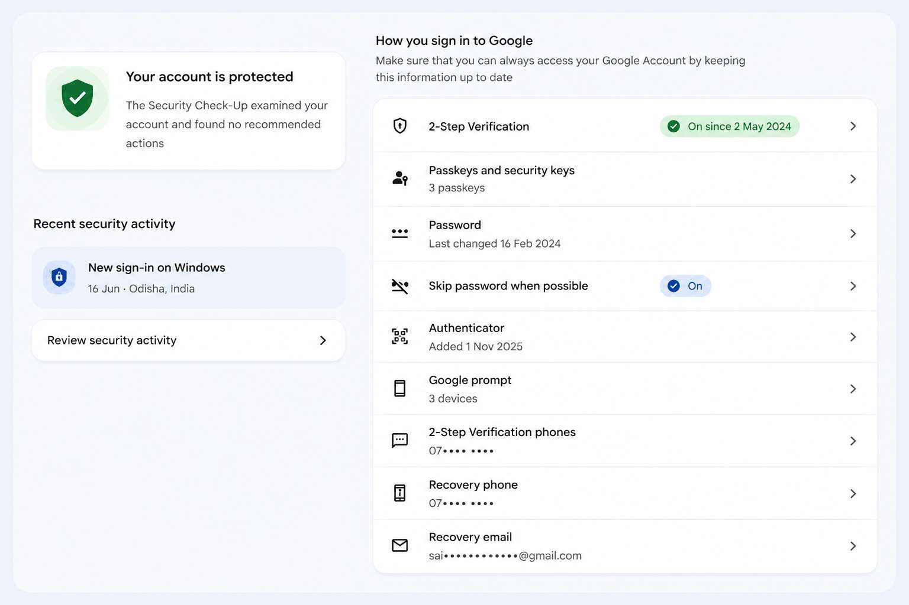
Common Mistakes
- Sharing your Google Account with family members or friends.
- Skipping recovery options or forgetting to save backup codes.
- Reusing the same password across multiple websites or services.
- Relying only on SMS for 2-Step Verification instead of an authenticator app.
Checklist
03 — Creating a Channel
Your first setup matters more than you think. A properly configured channel builds trust, improves discoverability, and gives new viewers a reason to subscribe.
Deep-dive topics
Each topic includes clear explanations, practical screenshots, and step-by-step guidance.
Channel Name / Display Name
What It Is
Your display name is the public name people see across YouTube. Unlike your handle, it can include spaces, capitalization, and special characters.
Why It Matters
Your name shapes first impressions. A clear, memorable name helps viewers recognize and remember your channel.
How It Works
Set it in YouTube Studio → Customisation → Basic info. Avoid changing it frequently once your audience starts growing.
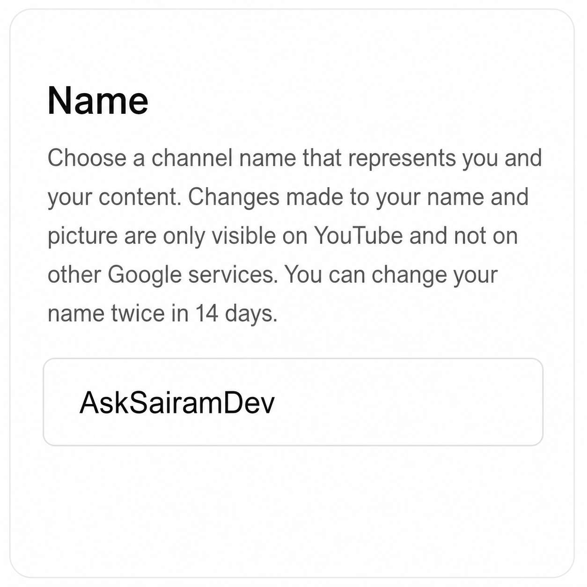
Handle (@asksairamdev)
What It Is
The handle is the unique @identifier attached to your channel, used in mentions, comments, and the shareable URL (youtube.com/@asksairamdev).
Why It Matters
A consistent handle strengthens your brand identity and makes your channel easier to find across YouTube. Choose the same handle you use on other social platforms whenever possible.
How It Works
Choose a short, memorable handle during channel setup or update it later in YouTube Studio → Customisation → Basic info. Availability is checked instantly as you type.
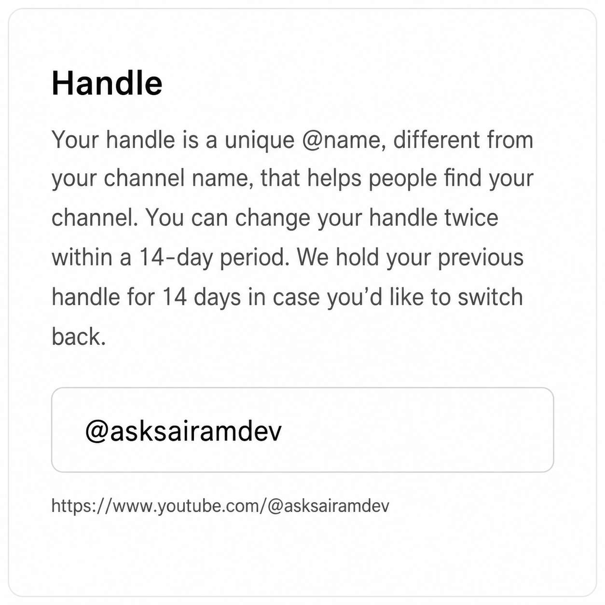
Channel URL
What It Is
Your Channel URL is the web address people use to visit your YouTube channel. For new channels, it's automatically created from your handle (for example, youtube.com/@yourname).
Why It Matters
A clean and memorable URL is easier to share in your Instagram bio, LinkedIn profile, portfolio, email signature, and other social platforms. It also strengthens your personal or business brand.
How It Works
You don't need to create your Channel URL manually. Once you choose your handle, YouTube automatically generates your public channel URL. Changing your handle later will also update the URL.
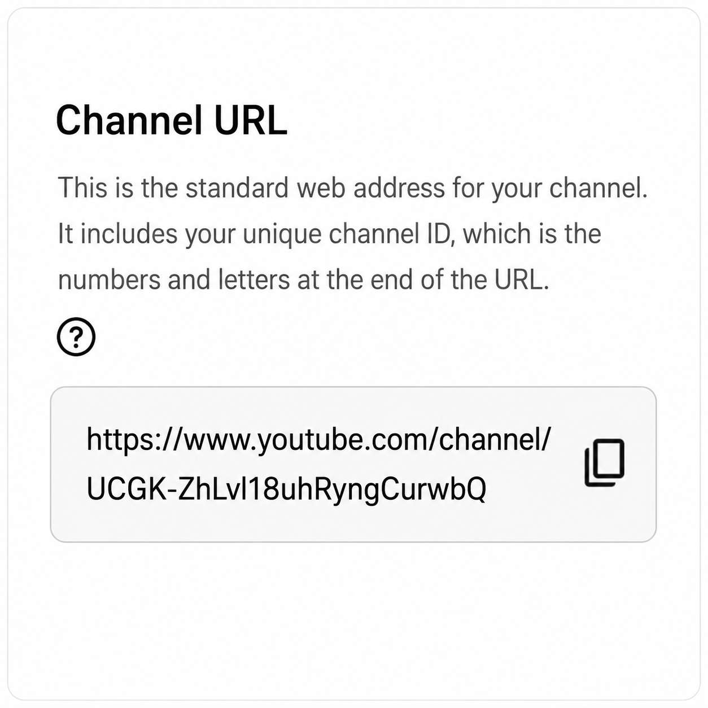
Country
What It Is
This setting tells YouTube which country your channel is based in. It's used for regional features, analytics, and some monetization and tax-related settings.
Why It Matters
Choose the country where you genuinely live or operate. This helps YouTube apply the correct regional settings and supports accurate tax and monetization information when applicable.
How It Works
Set your channel country in YouTube Studio → Settings → Channel → Basic info. Choose the country where you genuinely live or operate your channel, and update it if your location changes.
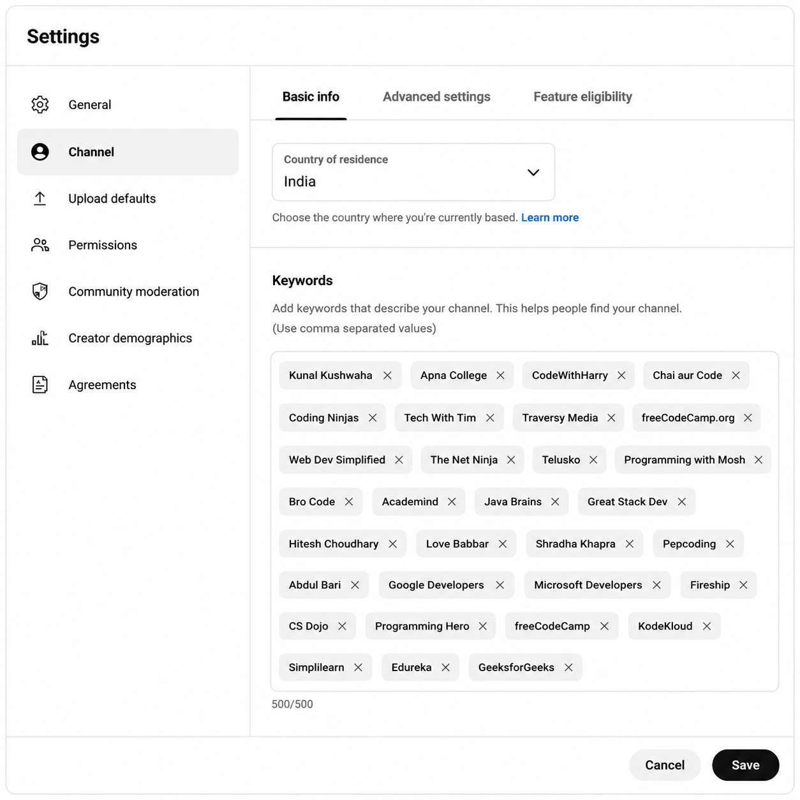
Verification
What It Is
Channel verification (via phone number) unlocks features like custom thumbnails, longer videos, live streaming, and appeals, separate from the blue 'Verified' badge given to larger, notable channels.
Why It Matters
Without phone verification, you're locked out of essentials like custom thumbnails and Community posts, which are foundational for click-through rate and audience engagement.
How It Works
Go to YouTube Studio → Settings → Channel → Feature eligibility and follow the phone verification prompt; it takes a single code sent by text or call.
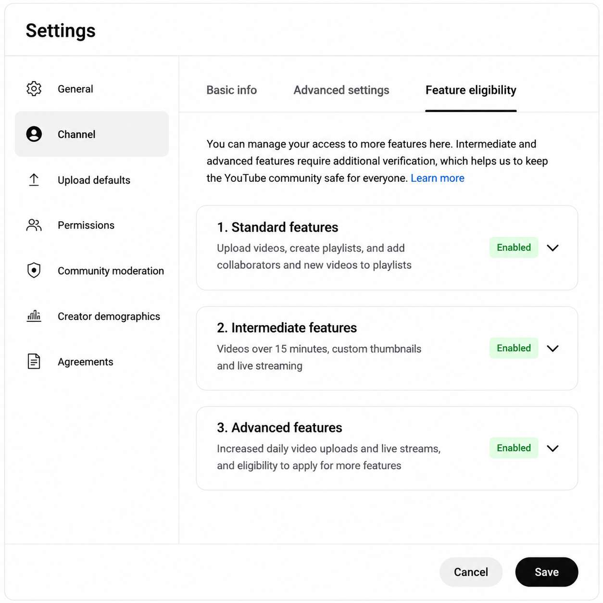
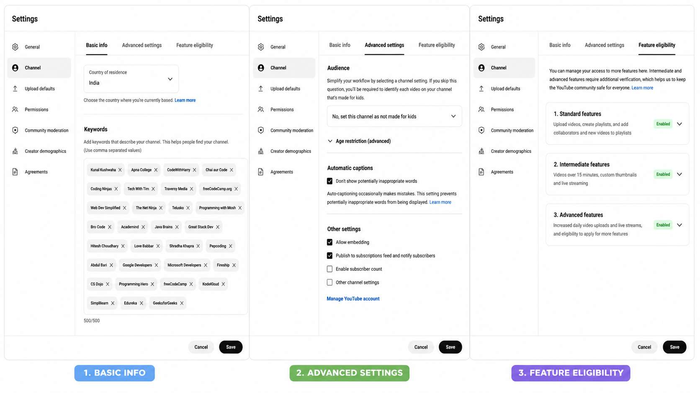
Common Mistakes
- Picking a handle full of random numbers because the clean one was taken.
- Skipping phone verification, then being unable to upload a custom thumbnail.
- Setting the wrong country and getting mismatched monetization rules.
Branding & Design
Identity, visuals, and the free tools that build them.
04 — Professional Branding
Logo, colors, voice, and the visual and verbal identity people recognize before they read a single word.
Core elements
- Logo / Profile picture - must be readable as a tiny circle (98×98px minimum clarity).
- Banner - your billboard; communicates niche in 3 seconds.
- Watermark - a small branding icon displayed in the bottom-right corner of your videos to reinforce brand recognition and encourage subscriptions.
- Color psychology - red = urgency/energy, blue = trust, green = growth/finance, black = premium.
- Typography - pick 1 display font + 1 body font and reuse everywhere (thumbnails, banner, lower-thirds).
Brand voice vs personality
- Voice - How your content sounds (professional, educational, humorous, motivational, casual).
- Personality - How your audience experiences you (teacher, mentor, friend, storyteller, expert, entertainer).
Deep-dive topics
Each topic includes clear explanations, practical screenshots, and step-by-step guidance.
Logo / Profile Picture
What It Is
Your profile picture is the circular image shown beside your videos, comments, Shorts, and search results. It represents your brand across YouTube.
Why It Matters
A clear and memorable profile picture helps viewers recognize your content instantly, building trust and long-term brand recognition.
How It Works
Upload your profile picture in YouTube Studio → Customisation → Branding. Since YouTube displays it as a circle, keep important details centered so nothing gets cropped.
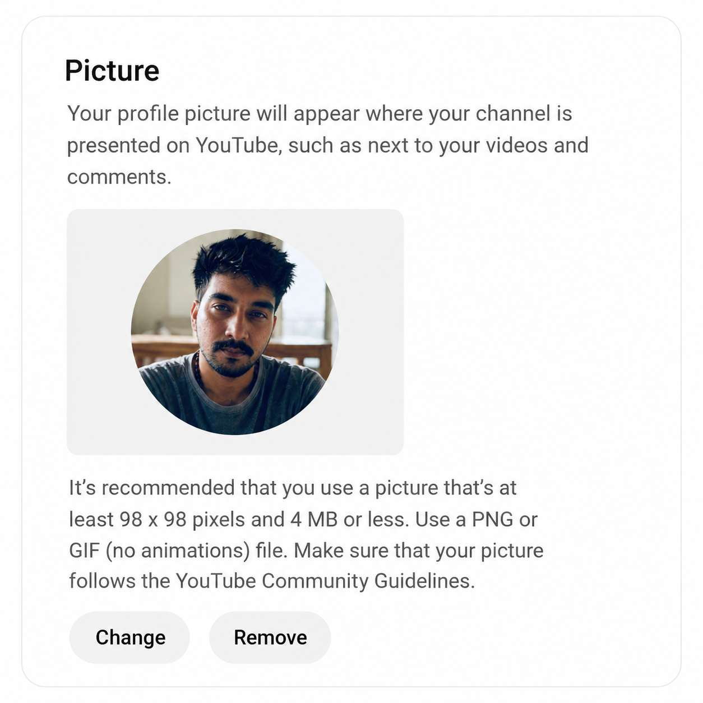
Banner
What It Is
The banner is the wide header image across the top of your channel page, recommended at 2560×1440px with a 1546×423px 'safe area' that displays consistently across devices.
Why It Matters
It's the first full-width visual a new visitor sees when they click through to your channel, and it has roughly three seconds to communicate niche, value, and personality.
How It Works
Upload it in YouTube Studio → Customization → Branding, keeping all critical text and logos inside the safe area since desktop, tablet, and TV crop the edges differently.
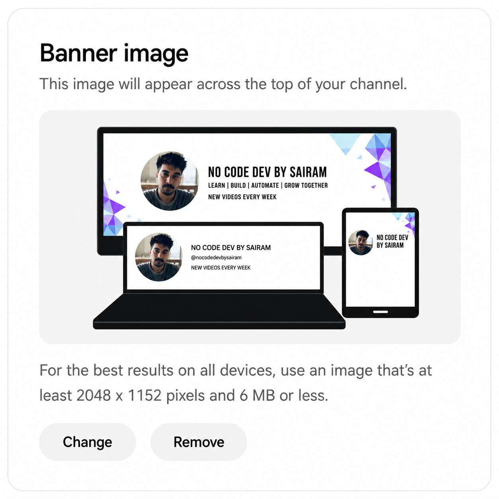
Watermark
What It Is
The watermark is a small subscribe-prompt icon displayed in the bottom-right corner of every video, which viewers can click mid-video to subscribe without leaving the page.
Why It Matters
It turns every single video, old or new, into a passive subscribe opportunity, viewers who land on an older upload via search still see a one-click subscribe option.
How It Works
Set it once in YouTube Studio → Customization → Branding, uploading a transparent PNG (recommended 150×150px); it then applies automatically to every video, including past uploads.
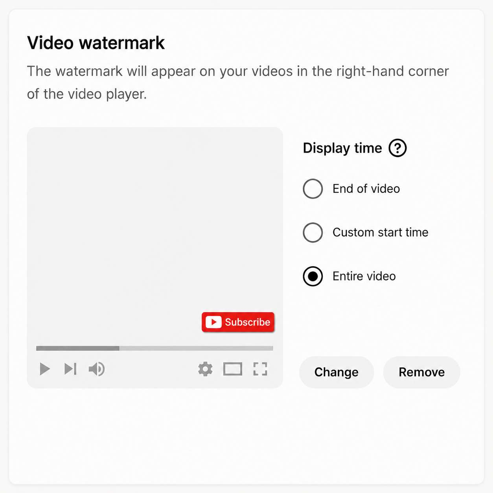
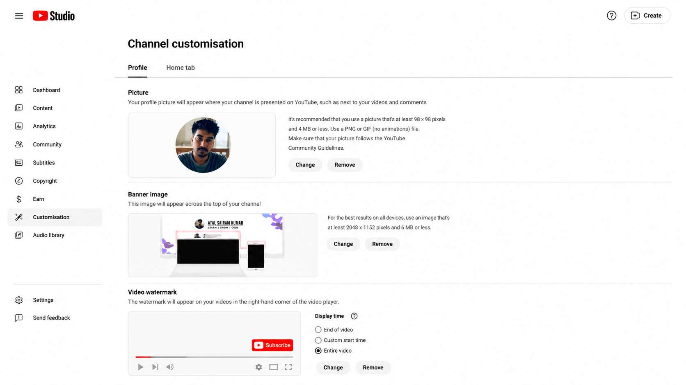
Common Mistakes
- Your branding doesn't need to be perfect. It needs to be consistent.
- People subscribe because of value, not aesthetics alone.
- If you're redesigning more than you're publishing, you're focusing on the wrong thing.
05 — Free Design Tools
The exact free toolkit for logos, graphics, fonts, stock assets, and cutouts. Full official links, free-vs-paid breakdowns, and alternatives for every tool below are in the Tool & Resource Directory.
Deep-dive topics
Each topic includes clear explanations, practical screenshots, and step-by-step guidance.
Canva
What It Is
Canva is a drag-and-drop design tool with ready-made templates for thumbnails, banners, and logos, usable directly in a browser with no design background required.
Why It Matters
It removes the single biggest barrier to consistent branding, and most beginners quit on design before they quit on content, and Canva collapses that learning curve to almost nothing.
How It Works
Create a free account, search a template category (e.g. 'YouTube Thumbnail'), and customize text, colors, and images; save your brand's fonts/colors once as a 'Brand Kit' so every future design starts pre-styled.
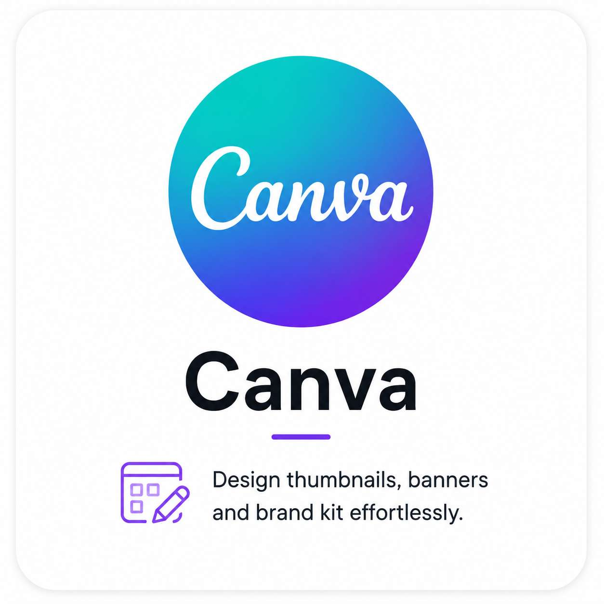
Adobe Express
What It Is
Adobe Express is a free, browser-based design tool similar to Canva, built on Adobe's stock and font ecosystem, aimed at quick graphics, thumbnails, and short video edits.
Why It Matters
It gives you access to Adobe-quality stock photography and fonts without needing Photoshop or a paid Creative Cloud plan, which matters most when budget is the limiting factor.
How It Works
Sign in with a free Adobe account, pick a template sized for YouTube, and edit directly in-browser; designs export instantly as PNG/JPG for upload.
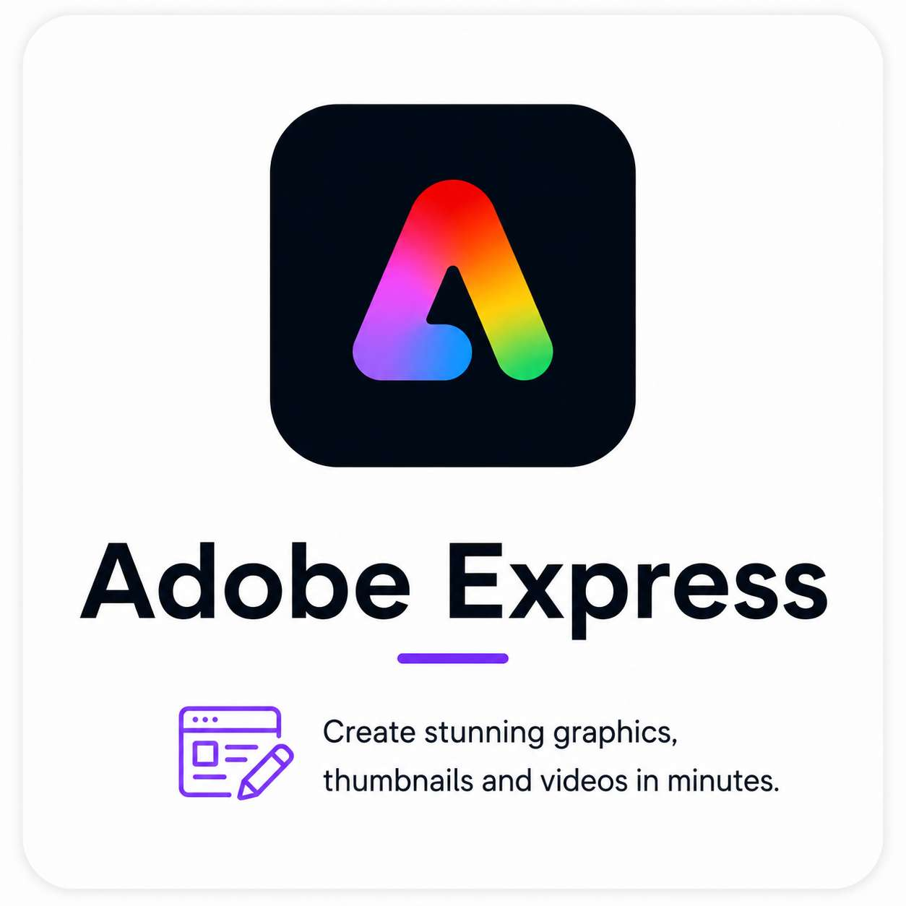
Photopea
What It Is
Photopea is a free, browser-based image editor that mimics Photoshop's interface and supports full layers, masks, and PSD files, without any install or subscription.
Why It Matters
It gives creators Photoshop-level control (precise cutouts, layer effects, text manipulation) at zero cost, which matters for advanced thumbnail work templates alone can't achieve.
How It Works
Open it directly in a browser, import a PSD/PNG/JPG, and use familiar Photoshop-style tools (layers panel, selection tools, blend modes) to build or edit graphics.
TinyPNG
What It Is
TinyPNG is a free image compression tool that shrinks PNG and JPG file sizes while preserving visual quality, used right before uploading thumbnails or banners.
Why It Matters
Smaller, well-compressed images load faster across devices and avoid the rare cases where oversized files cause upload or rendering issues, and quality looks essentially identical to the human eye.
How It Works
Drag an image onto the TinyPNG website, wait a few seconds, and download the compressed version; no account or software install is required.
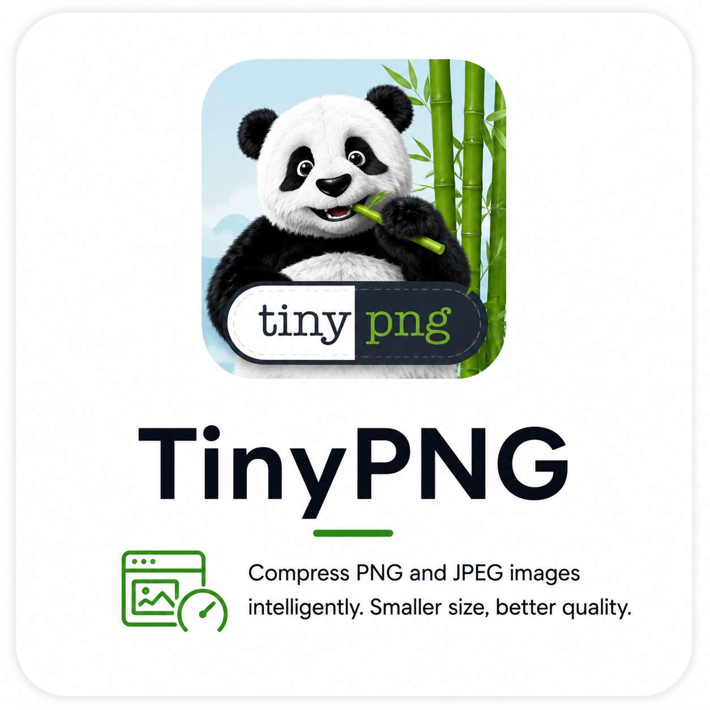
Remove.bg
What It Is
Remove.bg is a free tool that automatically detects and removes the background from a photo, isolating a person or object as a transparent cutout in seconds.
Why It Matters
Cutout faces and objects are one of the most consistent high-performing thumbnail patterns on YouTube, and manual background removal is otherwise slow and skill-dependent.
How It Works
Upload a photo, let the AI detect the subject, and download the transparent PNG to layer into Canva, Photopea, or any other design tool.
Common Mistakes
- Using copyrighted stock photos found via reverse Google Image search instead of a licensed library.
- Uploading huge uncompressed PNGs that slow load and look identical to compressed versions.
06 — Profile Picture
The 98px circle that has to communicate your entire niche instantly.
Style directions
- Minimal - flat shape/initial on solid color.
- Luxury - gold/black, serif initials.
- Gaming - bold character art, neon accents.
- Education - friendly face or icon + clean sans type.
- Business - real headshot, neutral background.
- Personal Brand - your face, consistent across all platforms.
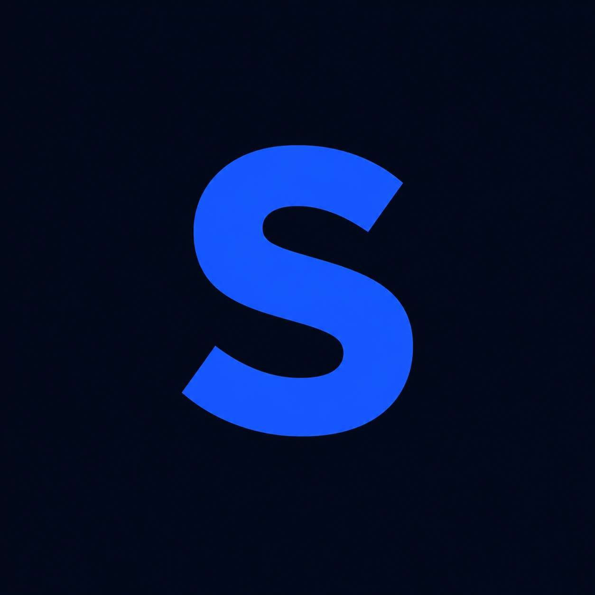
Common Mistakes
- Using a detailed photo that becomes unrecognizable at small sizes.
- Changing your profile picture too often, which weakens brand recognition.
- Choosing low-contrast colors that disappear in YouTube's interface.
- Adding text or logos that become unreadable when scaled down.
07 — YouTube Banner
Your channel's billboard, sized correctly and readable on every device.
Specs & safe area
- Keep all important content inside the center safe area (Upload at 2560 × 1440 px (16:9 aspect ratio)). YouTube crops banners differently on TVs, desktops, tablets, and mobile devices. Anything placed outside the safe area may be cut off.
Design tips
- Put your value proposition or upload schedule inside the safe area, not the edges.
- Use 2-3 colors max, matching your brand kit.
- Large, bold typography, banners are viewed small on mobile.
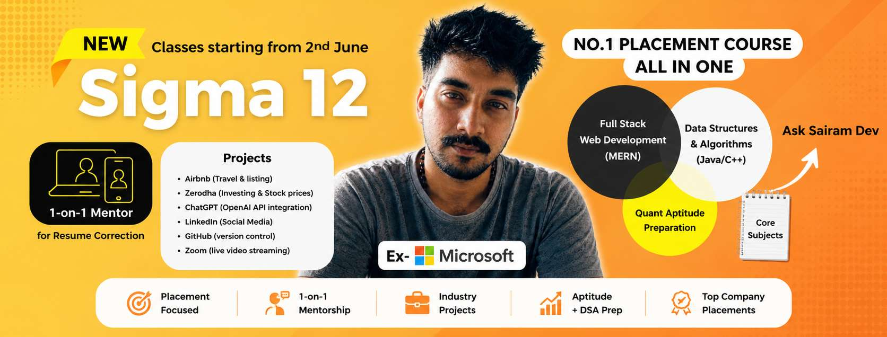
Discovery & SEO
How the algorithm finds your channel, and what you actually control.
08 — Channel Optimization
The settings layer that quietly affects discovery and viewer trust on every single video. All settings live inside YouTube Studio, see the Tool & Resource Directory for the official link.
Deep-dive topics
Each topic includes clear explanations, practical screenshots, and step-by-step guidance.
Upload Defaults
What It Is
Upload defaults are pre-filled settings (description template, tags, category, visibility, license, comment settings) applied automatically to every new video you upload.
Why It Matters
They save time on repetitive tasks and prevent forgotten settings, like leaving a video unlisted by accident or skipping your standard links and disclosures.
How It Works
Set them once in YouTube Studio → Settings → Upload defaults, including a description template with placeholders for links, hashtags, and a disclosure line.
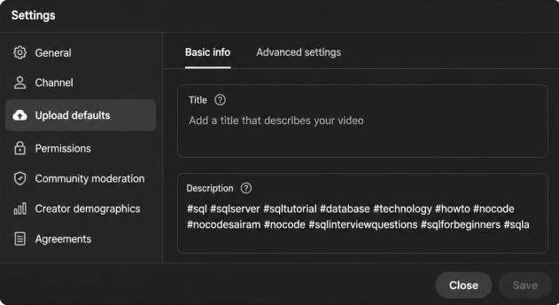
Channel Keywords
What It Is
Channel keywords are a set of terms entered once that describe your channel's overall topic, separate from the tags you add to individual videos.
Why It Matters
They give YouTube broader, channel-level context about what you cover, which can support how your videos and channel are categorized and recommended.
How It Works
Add them in YouTube Studio → Settings → Channel → Basic info, using a short list of terms that genuinely describe your niche rather than every possible related word.
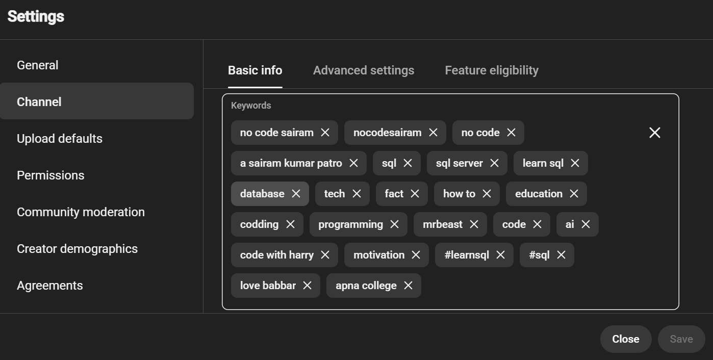
About Section
What It Is
The About section is the channel page area containing your description, business contact email, and links to your website and social profiles.
Why It Matters
It's the first thing brands, collaborators, and curious new viewers check to confirm what your channel is about and whether it's worth following or contacting.
How It Works
Fill it in via YouTube Studio → Customization → Basic info, writing a clear description of what you post and how often, then add a business email and external links.
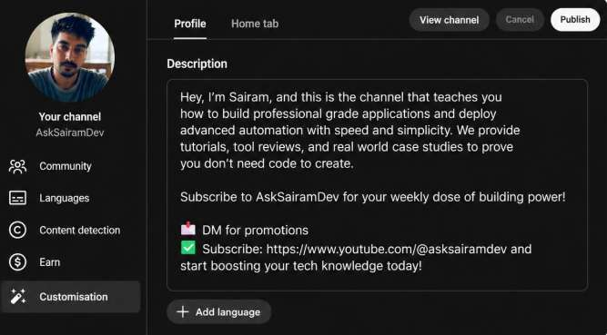
Featured Sections & Homepage Layout
What It Is
Featured sections are customizable rows on your channel homepage (e.g. 'Popular uploads', 'Latest videos', topic-based playlists) that organize your content for new visitors.
Why It Matters
A new visitor who lands on your channel page with no organization has no obvious next step, featured sections give them an immediate path into your catalog.
How It Works
Arrange them in YouTube Studio → Customization → Layout, choosing which content rows appear and in what order, distinct for signed-out vs. returning visitors.
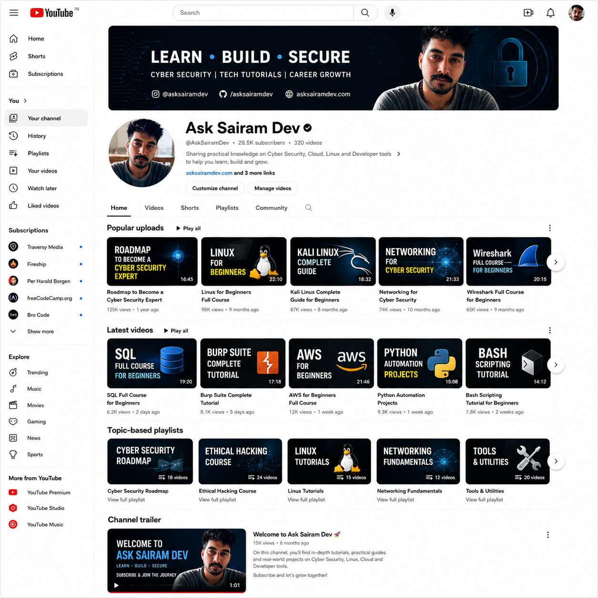
Playlists
What It Is
Playlists are grouped collections of related videos that play sequentially, organizing your catalog by topic, series, or format.
Why It Matters
They turn a one-video visit into a multi-video session by giving viewers an obvious 'what's next' instead of relying on YouTube's recommendations alone.
How It Works
Create them in YouTube Studio → Content → Playlists, adding relevant videos in a sensible order and writing a playlist title/description with its own keywords.
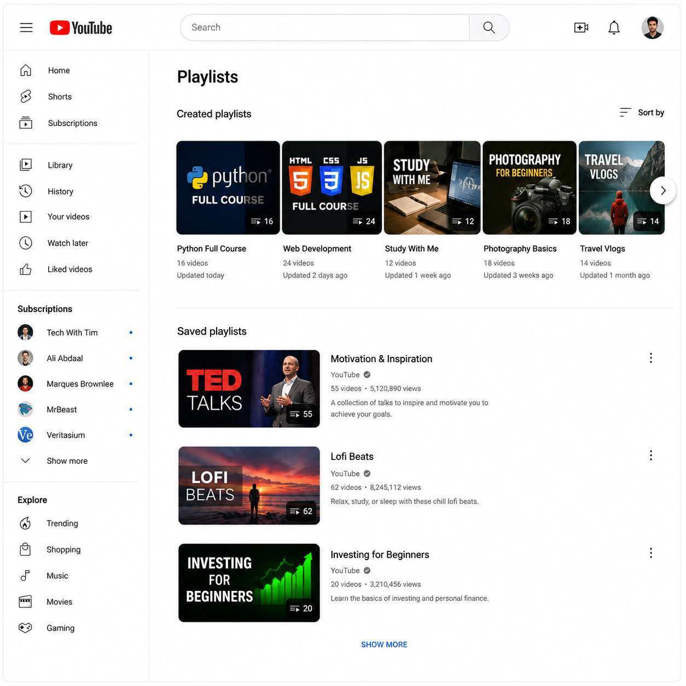
Trailer
What It Is
The channel trailer is a short video shown automatically to non-subscribers visiting your channel homepage, distinct from what subscribers see.
Why It Matters
It's a dedicated pitch slot to answer 'who is this for and what will I get' before a first-time visitor decides whether to subscribe or leave.
How It Works
Set it in YouTube Studio → Customization → Layout by selecting an existing video (or a video made specifically for this purpose) as the trailer for non-subscribers.
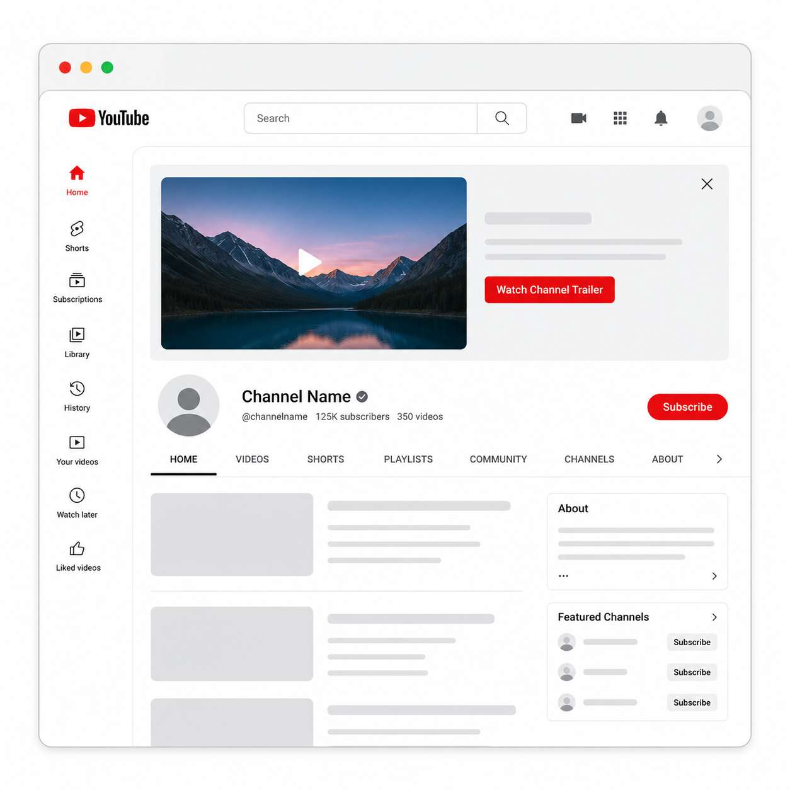
Common Mistakes
- Leaving your About section blank or too generic.
- Not adding a business email or external links.
- Forgetting to organize your homepage with featured sections.
- Uploading videos without creating playlists.
- Using a weak or outdated channel trailer.
- Never updating your channel homepage as your content grows.
09 — YouTube SEO (Deep)
How the algorithm actually decides what to show, and the levers you control.
Ranking signals
- CTR (Click-Through Rate) - % of people who click after seeing your thumbnail/title.
- Retention & Watch Time - how long people actually watch, widely believed (based on public statements from YouTube staff, not an official published ranking formula) to be among the most influential signals.
- Session time - whether your video keeps people on YouTube afterward (good) or sends them away (bad).
- Engagement - likes, comments, shares relative to views.
- Audience satisfaction - measured via surveys YouTube shows after some views.
On-page SEO elements
- Title, description, tags, hashtags, filename, captions/subtitles, chapters, cards, end screens - all feed metadata the algorithm and search use to understand and surface your video.
Deep-dive topics
Each topic includes clear explanations, practical screenshots, and step-by-step guidance.
CTR (Click-Through Rate)
What It Is
CTR is the percentage of people who click your video after seeing its thumbnail and title, shown in YouTube Studio's Analytics → Reach tab.
Why It Matters
It's the first hurdle every video has to clear, no matter how good the content is, it can't be watched if nobody clicks, making CTR the entry point to every other ranking signal.
How It Works
Improve it by testing different thumbnail/title combinations and tracking CTR per impression source; YouTube shows CTR broken down by traffic type (search, browse, suggested).
Growth Impact
Strong CTR combined with strong retention is widely understood to be one of the clearest combinations associated with continued recommendation by the algorithm.
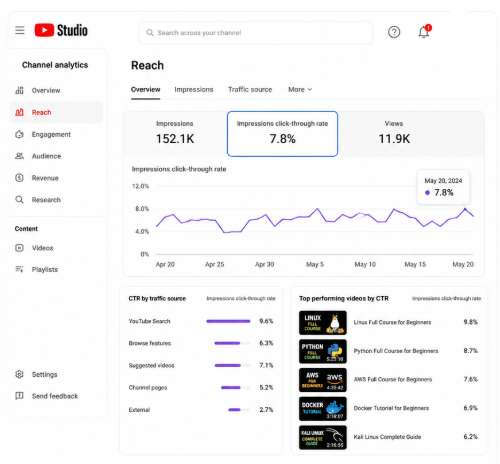
Audience Retention & Watch Time
What It Is
Audience retention measures how long viewers actually stay watching a video, shown as a retention graph in Studio; watch time is the total minutes accumulated across all views.
Why It Matters
It's widely believed, based on public statements from YouTube staff rather than a published formula, to be among the strongest signals tied to recommendation reach, since it reflects genuine viewer interest.
How It Works
Check the retention graph in Analytics → Engagement for each video; sharp drop-offs point to a specific weak moment (slow intro, broken promise, pacing issue) worth fixing in future edits.
Growth Impact
Videos that hold attention longer tend to get pushed to more viewers, compounding views well beyond the initial subscriber base.
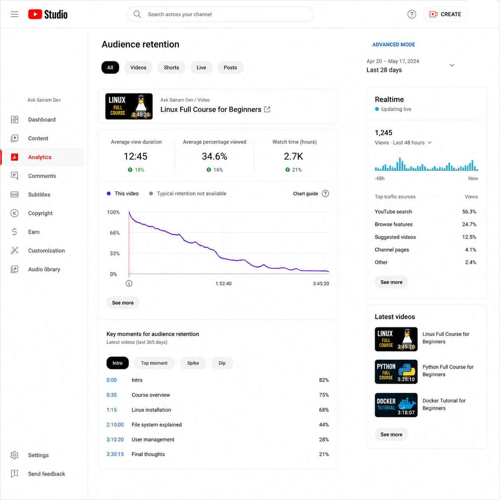
Session Time
What It Is
Session time reflects whether a video keeps viewers watching YouTube afterward (good) or causes them to close the app or browser (bad), a platform-level signal, not just per-video.
Why It Matters
YouTube's core business incentive is keeping people on the platform, so content that extends a viewing session is treated favorably relative to content that ends it.
How It Works
There's no single 'session time' chart for creators, but end screens, playlists, and strong suggested-video matching all indirectly support it by giving viewers an obvious next video.
Growth Impact
Videos that reliably lead into another watch (yours or someone else's) tend to be favored in suggested-video placement, an important long-term traffic source.
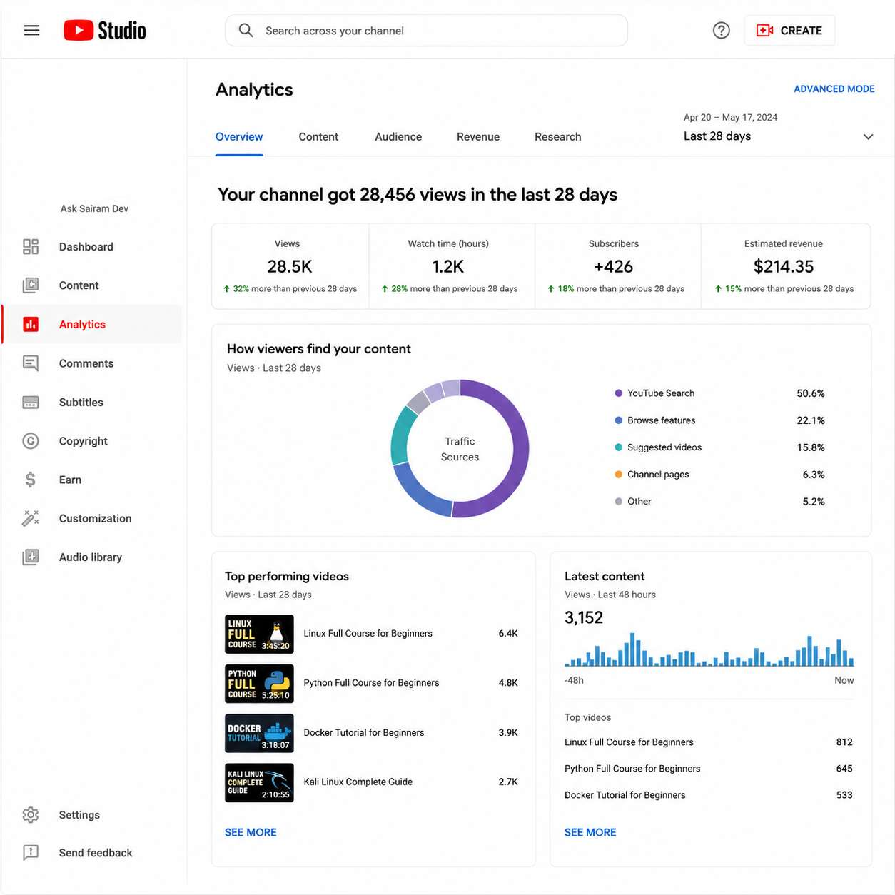
Engagement
What It Is
Engagement covers likes, comments, and shares relative to total views, visible in Analytics → Engagement, reflecting how actively viewers respond beyond passive watching.
Why It Matters
Active responses are a stronger signal of genuine interest than a view alone, and comments in particular can extend a video's relevance through ongoing discussion.
How It Works
Encourage it naturally by asking a specific question tied to the video's topic, replying to early comments to spark more discussion, and avoiding generic 'like and subscribe' asks.
Growth Impact
Videos with healthy engagement relative to their view count are more likely to be surfaced as discussion-worthy, supporting continued algorithmic reach.
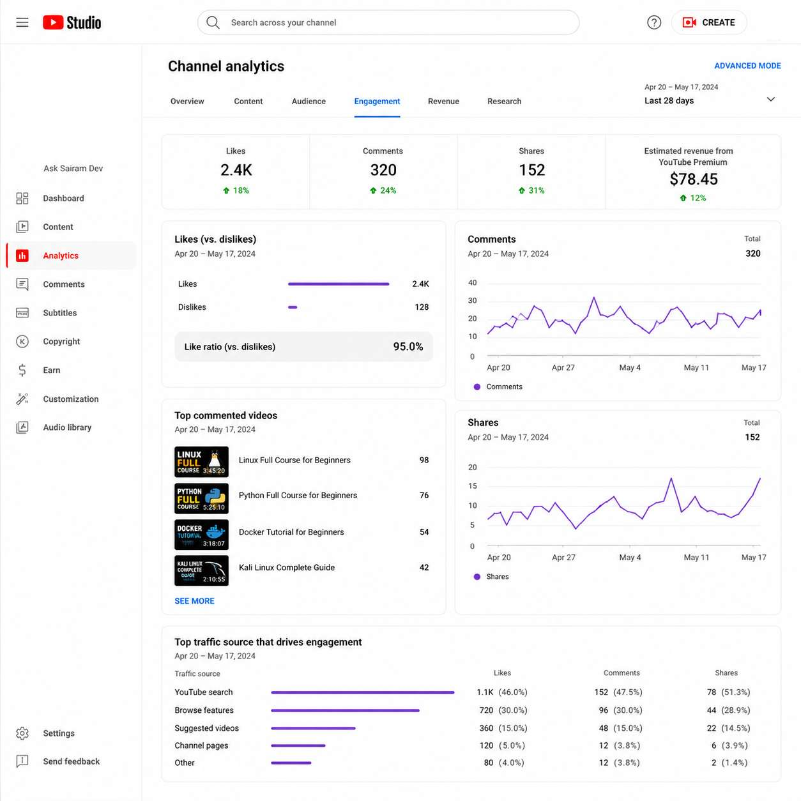
Audience Satisfaction
What It Is
Audience satisfaction is measured through post-video surveys YouTube occasionally shows viewers, asking how satisfied they were, separate from passive metrics like watch time.
Why It Matters
It's a direct, self-reported quality signal rather than an inferred one, helping YouTube distinguish 'watched because of a misleading hook' from 'genuinely valuable to the viewer.'
How It Works
You can't trigger or see individual survey responses, but you can review aggregate sentiment via comments and any satisfaction data YouTube surfaces in Studio for eligible channels.
Growth Impact
Strong satisfaction signals reinforce that a video's promise matched its delivery, supporting sustained recommendation rather than a short CTR-driven spike that fades.
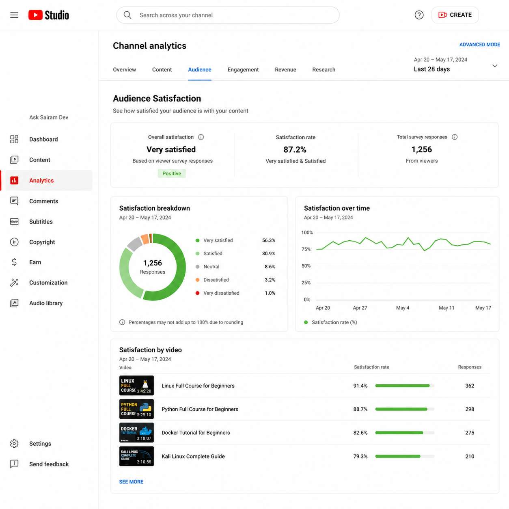
Common Mistakes
- Optimizing only for CTR and ignoring retention, high clicks + low watch time tanks future reach.
- Renaming the video file 'final_v3.mp4' instead of using descriptive, keyword-rich filenames before upload.
10 — Keyword Research
Finding exactly what your audience is already typing into the search bar. Official links for every tool are in the Tool & Resource Directory.
Keyword Research Made Simple
Keywords are one of the most important parts of SEO, not just on YouTube but across all platforms, because they help search systems understand what your content is about and which search queries it should appear for.
The goal is not to stuff random keywords into your title or description. In fact, overusing keywords can make your content look spammy and unnatural. The best-performing organic videos usually keep things simple, clear, and aligned with the exact words real viewers are already searching for.
For example, in a title like:
“How to Do My First Project on Google Cloud Kubernetes”
- “How to” is the search intent or question format
- “first project on Google Cloud Kubernetes” is the core keyword/topic
In simple terms, keyword research means finding the exact phrases your target audience is already typing into YouTube’s search bar, and then building your video title, description, and content around that topic naturally.
Official links for every tool are available in the Tool & Resource Directory.
Tools & method
- YouTube Search autocomplete - type your topic, see real suggested searches.
- Google Trends - confirms whether interest is rising or seasonal.
- vidIQ / TubeBuddy - show search volume & competition score per keyword.
- AnswerThePublic - maps question-based searches around a topic.
- ChatGPT - brainstorm long-tail variations and viewer phrasing fast.
Long-tail keywords
- Specific, lower-competition phrases (e.g. 'how to edit shorts in CapCut for beginners' vs 'video editing') easier to rank for and attract a more intent-matched viewer.
Deep-dive topics
Each topic includes clear explanations, practical screenshots, and step-by-step guidance.
YouTube Search Autocomplete
What It Is
Autocomplete is the dropdown of suggested searches YouTube shows as you type into its search bar, drawn directly from real queries other users have searched.
Why It Matters
It's free, real-time evidence of exactly how your audience phrases their searches, no estimation or third-party tool needed.
How It Works
Type your core topic into YouTube's search bar without hitting enter, and note the auto-suggested completions, try several starting phrases to surface different angles.
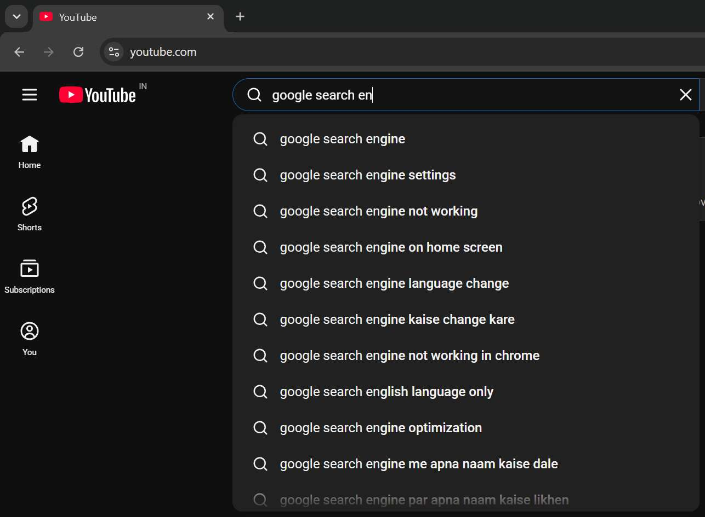
Google Trends
What It Is
Google Trends is a free tool showing how search interest in a topic has changed over time, including whether it's seasonal, rising, or declining.
Why It Matters
It helps you tell the difference between a fading trend and a stable, evergreen topic before investing production time into a video.
How It Works
Enter a keyword or topic at trends.google.com, review the interest-over-time graph, and compare it against related terms to see which phrasing has stronger momentum.
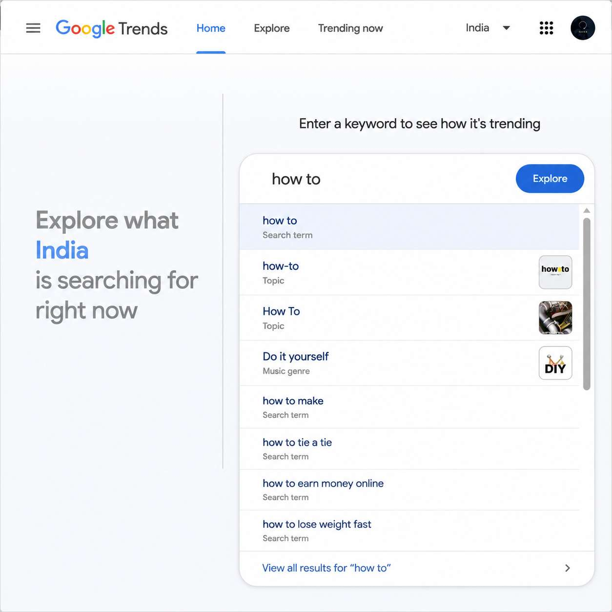
vidIQ
What It Is
vidIQ is a YouTube specific research tool (browser extension and dashboard) that shows estimated search volume, competition scores, and related keyword suggestions per topic.
Why It Matters
Premium tools can take this a step further by turning raw search behavior into YouTube specific scores, helping you focus on keywords that are actually realistic to rank for based on your channel’s current size.
How It Works
Install the extension or use the dashboard, search a topic, and review the volume/competition score alongside related keyword suggestions before finalizing a title.
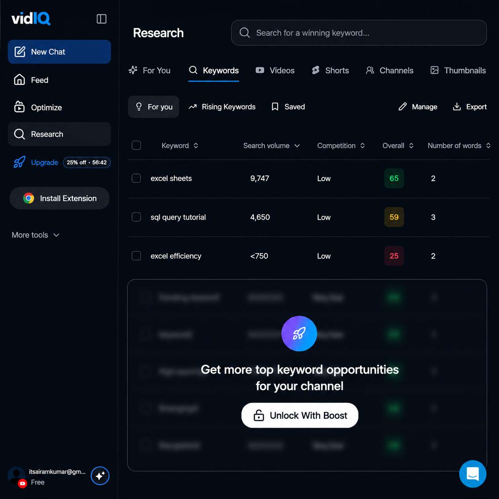
TubeBuddy
What It Is
TubeBuddy is a YouTube optimization browser extension offering keyword research, tag suggestions, A/B thumbnail testing, and bulk-editing tools for existing videos.
Why It Matters
Premium tools like TubeBuddy bring several optimization tasks into one workflow, keyword scoring, tag suggestions, thumbnail testing, and channel optimization. So instead of juggling separate tools, you can work in one focused system that makes keyword research more practical, organized, and easier to take seriously.
How It Works
Install the extension, then use its keyword explorer while drafting titles/tags, and its A/B testing tool to compare thumbnail performance directly on live videos.
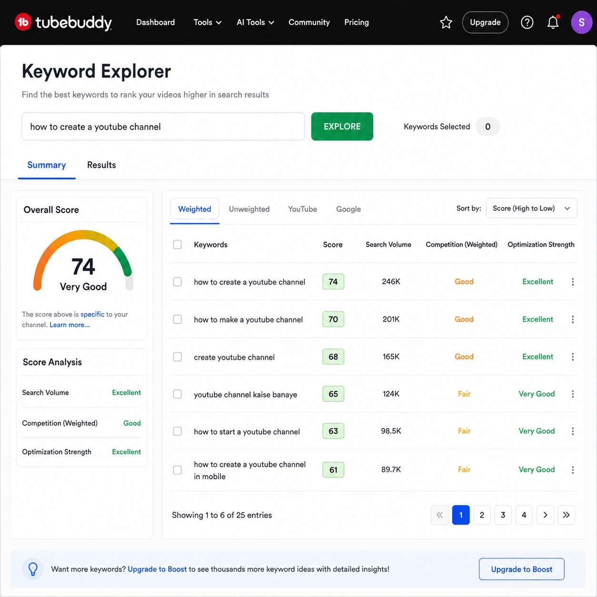
AnswerThePublic
What It Is
AnswerThePublic is a free-tier keyword tool that visualizes the actual questions people ask around a topic, grouped by patterns like 'how', 'why', 'can', and 'vs'.
Why It Matters
Many viewers search in question form, and this tool surfaces those exact question phrasings, which are often under-targeted compared to short head keywords.
How It Works
Enter a core topic, and review the generated map of question-based and preposition-based search phrases to find specific angles for video titles.
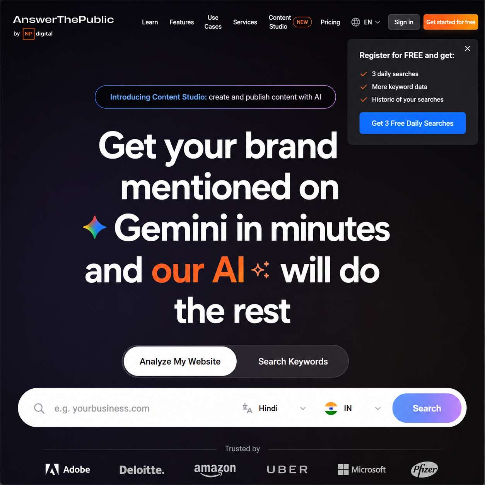
ChatGPT
What It Is
ChatGPT (or any general AI chat tool) can rapidly brainstorm long-tail keyword variations and likely viewer phrasing around a topic, based on language patterns rather than live search data.
Why It Matters
The quality of output depends a lot on the quality of the prompt, and a well-written prompt can quickly turn ChatGPT into a fast brainstorming assistant instead of giving generic results.
How It Works
Use focused prompts for each task, for example, ask it to generate beginner-friendly search phrases, SEO-friendly tags, multiple title options, or a keyword-rich description draft around your topic, then shortlist the best outputs and validate them with YouTube autocomplete or tools like vidIQ/TubeBuddy before finalizing
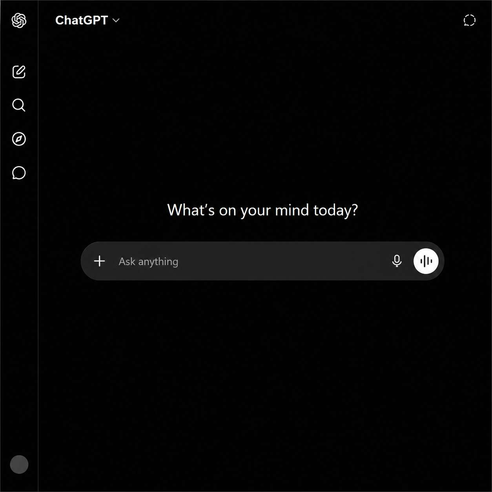
Common Mistakes
- Chasing only big, high-volume keywords when your channel is still too small to realistically rank for them.
- Repeating the same keyword everywhere and making the title or description sound forced instead of natural.
- Picking keywords just because a tool says they have volume, without checking whether the viewer actually wants that type of video.
- Ignoring YouTube’s own signals like autocomplete, competitor videos, and related suggestions, and relying only on external keyword tools.
- Choosing topics that may look searchable on paper but don’t match your channel’s current level, audience, or content style.
Content & Production
Planning, scripting, filming, editing, long-form, Shorts, and live.
11 — Content Planning
Turning random ideas into a calendar that compounds instead of resetting every week.
Building the calendar
- Content calendar - map topics to specific dates so you're never staring at a blank page.
- Posting schedule - pick a frequency you can sustain for 12 months, not 12 days.
- Competitor analysis - study top 5 channels in your niche: what topics, formats, lengths repeat.
- Evergreen vs Trending - evergreen content compounds in search for years; trending content spikes fast and fades.
Common Mistakes
- Targeting only high-volume keywords without considering whether your channel can realistically rank for them.
- Choosing keywords based on search volume alone instead of matching the viewer's search intent.
- Stuffing the same keyword repeatedly into the title, description, and tags instead of writing naturally.
- Ignoring YouTube Search suggestions and competitor videos while relying only on external keyword tools.
- Targeting broad keywords when a more specific long-tail keyword would better match your audience.
12 — Writing Scripts
The structure behind every video that keeps people watching instead of clicking away.
Script structure
- Hook (0-15s) - state the payoff or tension immediately, no slow intros.
- Problem - name the pain/question your viewer actually has.
- Storytelling - frame the solution as a journey, not a lecture.
- Solution - deliver the value you promised in the hook.
- CTA - one clear next action (subscribe, comment, watch next).
- Pattern interrupts - change pace/visual/tone every 20-30 seconds to protect retention.
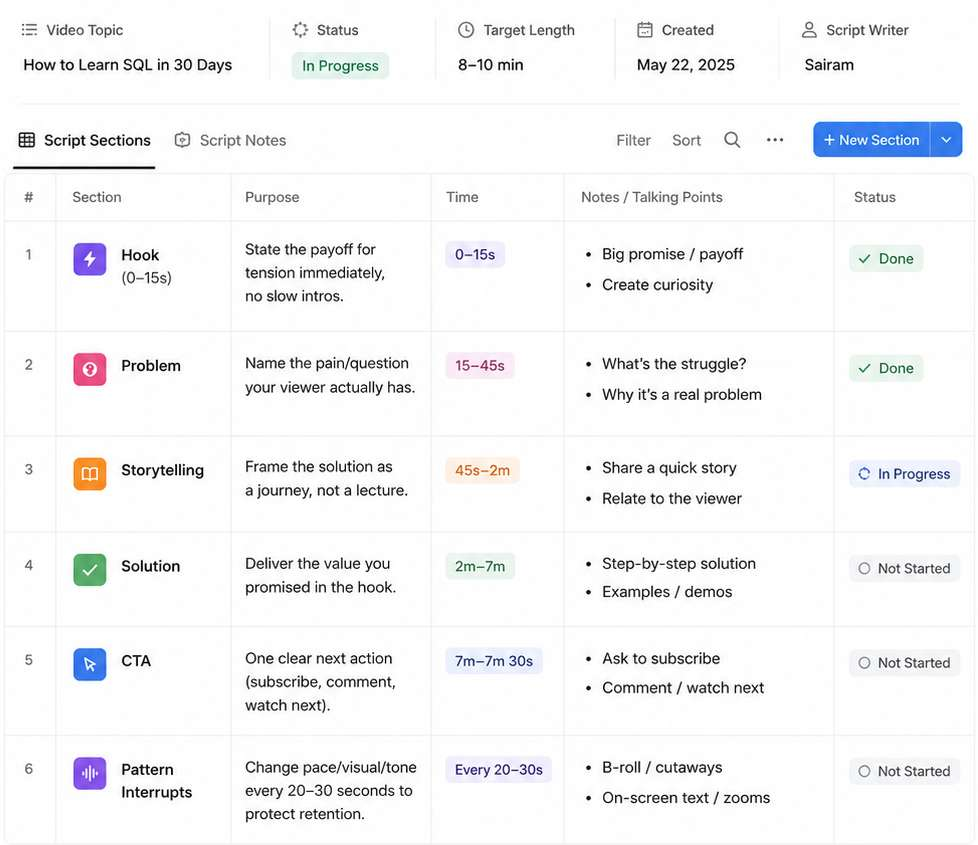
Common Mistakes
- Spending too long on the intro before delivering the actual value, which often causes a sharp early drop in retention.
- Stuffing one CTA with too many asks at once, subscribe, like, comment, share, join, so none of them feels clear or compelling.
13 — Creating Shorts
Vertical, fast, sound-on content built for swipe-attention spans.
Specs
- Aspect ratio: 9:16 vertical. Resolution: 1080×1920 minimum. Length: under 60s (ideally 15-34s for completion rate).
Production
- Hook in the first 1-2 seconds, no fade-ins, no logo intros.
- Captions are mandatory, most watch muted at first.
- Use trending sounds intentionally, matched to your message, not randomly.
- AI voiceover tools (ElevenLabs) work well for faceless Shorts.
Shorts vs Reels vs Facebook Reels
- Same vertical format works across all three, repurpose one edit, adjust captions/hashtags per platform's culture rather than re-shooting.
How Shorts monetization differs from long-form
- Shorts revenue comes from a separate ad-revenue pool shared across all eligible Shorts creators based on view share, rather than ads attached directly to your specific video the way long-form pre/mid-roll ads work.
- RPM on Shorts is typically much lower per-view than long-form, the model is built around volume and discovery, not high per-view revenue.
- Shorts can still drive real income indirectly even at low direct RPM, by funneling new viewers into your long-form catalog, memberships, or off-platform offers.
Common Mistakes
- Branding intros eating the first 3 seconds, shorts viewers swipe away instantly.
- Horizontal video pillarboxed into a vertical frame, looks unfinished.
- Expecting Shorts RPM to match long-form RPM, it's a different model by design.
14 — Creating Long Videos
Planning and recording setups for tutorials, talking-head, podcast, and presentation formats.
Pre-production
- Outline before recording, even a 5-bullet skeleton beats improvising from zero.
- Lighting: one key light at 45°, softened, beats any number of harsh unsoftened lights.
- Microphone matters more than camera, viewers tolerate average video far more than bad audio.
Formats
- Talking head - direct camera address, high trust-build.
- Screen recording / tutorial - step-by-step value content, great for SEO.
- Podcast-style / interview - long-form, relies on guest/topic pull.
- Presentation - slides + voiceover, strong for educational niches.
Equipment budget tiers buy for the tier you're actually at, not the one you wish you were
| Tier | Camera | Audio | Lighting |
|---|---|---|---|
| Zero-budget (Day 1) | Current smartphone, rear camera, stabilized on a stack of books | Phone's built-in mic, recorded close to the source, in the quietest room available | A window facing your face (not behind you) during daytime |
| Starter (first earnings) | Smartphone + basic clip-on tripod | Budget clip-on lavalier or USB mic | One affordable softbox or ring light |
| Intermediate | Entry-level mirrorless camera or a newer smartphone with manual camera controls | Dedicated USB condenser or wireless lav mic | Two-point lighting kit (key + fill) |
| Advanced | Mirrorless/DSLR with interchangeable lenses | XLR mic + audio interface or recorder | Full 3-point lighting with diffusion and background light |
Common Mistakes
- Recording in front of a bright window without any front light, which turns you into a silhouette.
- Skipping the outline completely and trying to “figure it out while talking,” which usually creates a bloated script and more editing work later.
- Spending heavily on a better camera while your audio is still weak, even though poor sound usually hurts retention faster than average visuals.
15 — Live Streaming
Shorts work differently from regular uploaded videos in how they’re made, monetized, and used to grow an audience, so they need their own setup and strategy.
Setup basics
- Encoder software - OBS Studio (free, open-source) is the most widely used tool for sending your screen/camera/mic to YouTube's live servers.
- Stream key - a private code from YouTube Studio's 'Go Live' section that connects your encoder to your channel, never share it publicly, since anyone with it can stream to your channel.
- Stream health monitor - YouTube Studio shows bitrate/dropped-frames in real time before and during a stream; check it before announcing you're live, not after viewers report problems.
- Mobile live streaming - available directly from the YouTube app once a channel meets the eligibility requirements (subscriber threshold, which has changed over time confirm the current number in Studio).
Format & content
- Q&A / community streams - lower production effort, high direct engagement.
- Gaming/let's-play streams - among the most established live formats on the platform.
- Co-streaming / collab streams - borrows trust from another creator's live audience in real time.
- Premieres - a scheduled 'watch together' countdown for a pre-recorded video, technically a hybrid between upload and live, useful for launch-moment engagement without true live risk.
How live monetization differs
- Super Chat and Super Thanks are concentrated almost entirely in live/premiere contexts, they barely apply to standard uploads.
- Ad monetization on live content works similarly to standard videos but depends on stream length and ad-break placement choices you control in Studio.
- Membership perks (members-only live chat, badges) are one of the strongest live-specific retention tools for a paying community.
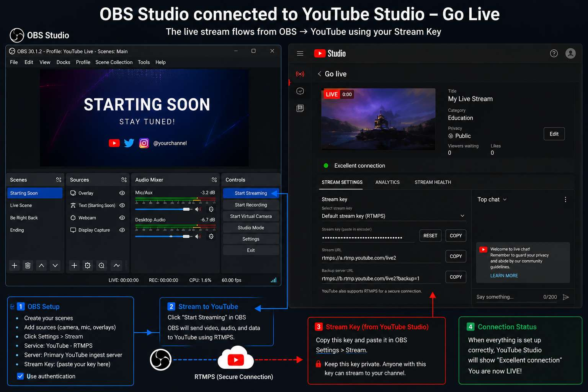
Common Mistakes
- Going live for the first time with zero test stream beforehand.
- Inconsistent live schedule, live audiences build habits around a fixed time slot more than uploaded-video audiences do.
- Ignoring chat moderation settings until a stream is already overrun by spam.
FAQs
- Do I need expensive products to start live streaming?
- No, a stable internet connection and a free encoder like OBS with your existing webcam/mic is enough to start; production quality matters less for live than for polished uploads, since the appeal is real-time interaction.
- Is live streaming better for growth than uploading videos?
- They serve different goals, uploads are typically stronger for long-term search-driven discovery, while live streams are stronger for deepening engagement with an audience you already have. Most growing channels use both rather than choosing one.
16 — Free Video Editing Software
Editing tools that cost nothing and can carry a channel to monetization. Official links and download pages are in the Tool & Resource Directory.
Options by use case
- CapCut - fastest for Shorts, built-in trending effects/captions.
- VN Editor - mobile-first, clean keyframe tools.
- DaVinci Resolve - professional-grade, steepest learning curve, best color grading free.
- Kdenlive / Shotcut / OpenShot - solid free desktop NLEs, lighter learning curve than Resolve.
- Clipchamp / Canva Video / Adobe Express - browser-based, fastest for simple cuts and templates.
Deep-dive topics
Each topic includes clear explanations, practical screenshots, and step-by-step guidance.
CapCut
What It Is
CapCut is a free mobile and desktop video editor built around fast vertical editing, with built-in trending effects, transitions, and auto-captioning, especially popular for Shorts.
Why It Matters
It's the fastest path from raw footage to a polished Short for most beginners, removing the need to learn a traditional desktop editor just to post short-form content.
How It Works
Import a clip, trim/arrange it on the timeline, add auto-generated captions, apply a trending effect or transition if relevant, and export directly in the correct vertical aspect ratio.
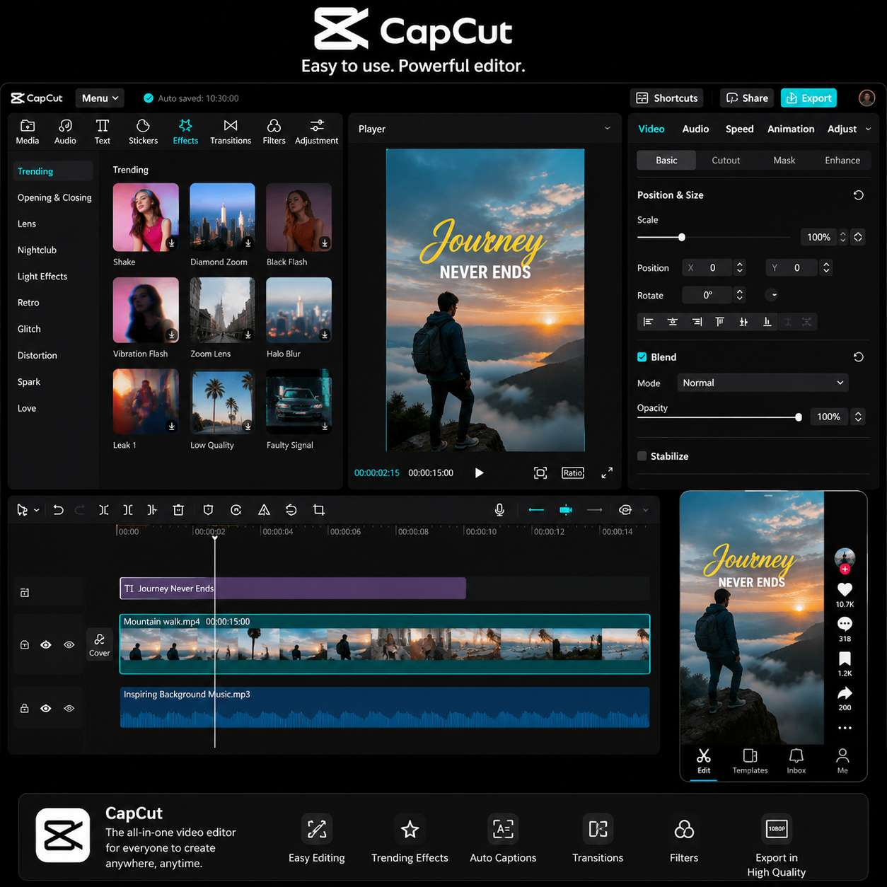
VN Editor
What It Is
VN Editor is a free, mobile-first video editor offering a clean timeline interface with keyframe animation, multi-track editing, and no watermark on exports.
Why It Matters
It bridges the gap between very simple Shorts apps and full desktop editors, giving mobile creators more precise control (keyframes, layered tracks) without paying for a desktop suite.
How It Works
Import clips on mobile or desktop, arrange multiple tracks, apply keyframe animations for movement/zoom effects, and export without a watermark at your chosen resolution.
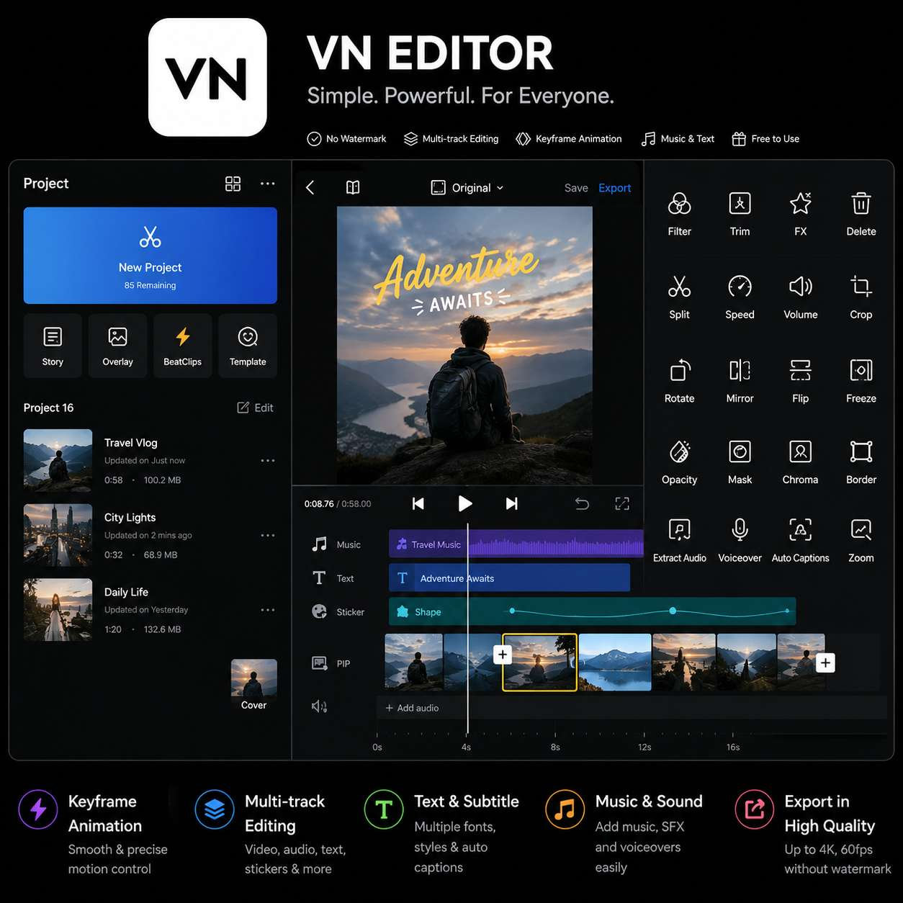
Vida
What It Is
Vida is a free mobile video editor offering trimming, music, text overlays, and basic effects aimed at quick social-style edits without a steep learning curve.
Why It Matters
For creators who only need fast, simple cuts (not multi-track or color-grading work), it removes the overhead of a more complex editor entirely.
How It Works
Import a clip on mobile, trim and reorder segments, add music/text overlays, and export directly to your phone's gallery for upload.
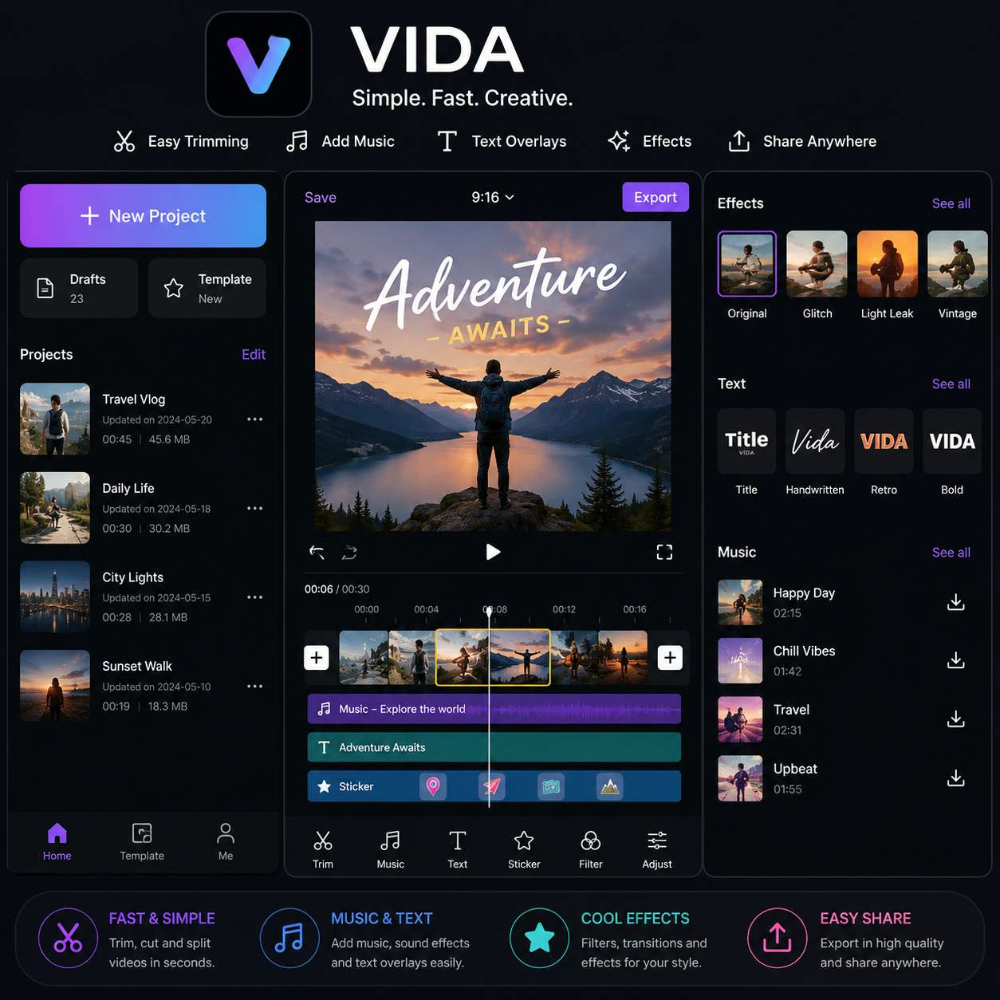
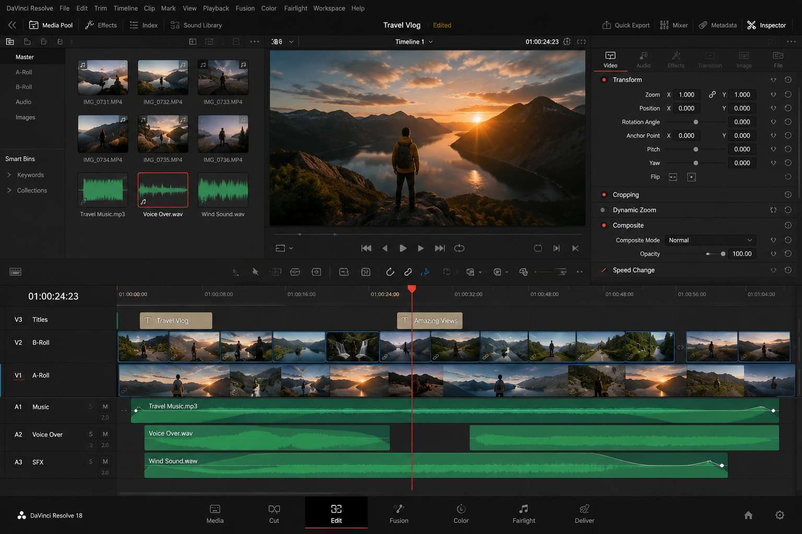
Common Mistakes
- Switching editors every other video never building speed/muscle memory.
- Over-editing with excessive transitions that distract from the message.
17 — AI Tools
Practical AI use across scripting, voice, visuals, and video generation. Official links for every AI tool are in the Tool & Resource Directory.
By task
- ChatGPT / Gemini / Claude - scripting, titles, descriptions, idea generation, repurposing transcripts.
- Leonardo AI / Ideogram / Whisk - thumbnail concepts and channel art.
- ElevenLabs - realistic AI voiceovers for faceless content.
- Runway / Pika - short AI video clips/b-roll generation.
- HeyGen / Synthesia - AI avatar presenters for talking-head-style videos without filming.
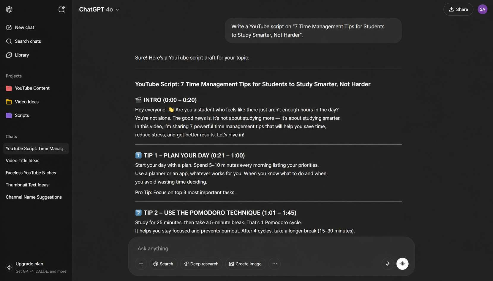
Common Mistakes
- Publishing fully AI-generated scripts/voiceovers with zero personal editing, generic, low-retention content.
- Ignoring AI tool terms of service around commercial use of generated voices/likenesses.
18 — Creating Thumbnails
The single biggest lever on whether anyone clicks at all.
Psychology & design
- High contrast colors increase scroll-stopping power.
- Faces with clear emotion outperform plain text/graphic thumbnails in most niches.
- 3-5 words maximum of bold text, and anything more is unreadable at mobile size.
- Composition: rule of thirds, subject not centered dead-middle, clear focal point.
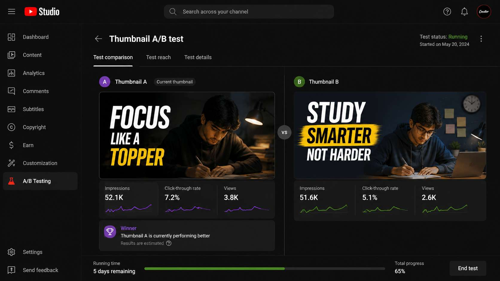
Common Mistakes
- Text too small to read on mobile.
- Thumbnail that doesn't match the actual video content, kills retention and trust even if CTR is high.
Publishing & Studio
Uploading, the Studio dashboard, account security, and analytics.
19 — Uploading Videos
Every field in the upload flow, explained, so nothing gets left on autopilot.
Fields
- Filename - rename before upload with descriptive keywords (helps initial indexing).
- Title / Description / Tags - your core SEO metadata (see Part 9).
- Audience & Age restriction - 'Made for Kids' changes feature availability and ad types; mislabeling risks penalties.
- Category / License / Comments - category affects related-video grouping; default license usually 'Standard YouTube License'.
- Visibility & Scheduling/Premiere - Public/Unlisted/Private, or schedule for a specific time, or run as a Premiere to build a live countdown.
COPPA & 'Made for Kids' - what actually changes
- Marking a video/channel 'Made for Kids' (required by law in relevant regions if content is directed at children) disables personalized ads, comments, end screens, cards, notifications bell, and live chat on that content.
- This generally lowers ad revenue per view, since personalized ads pay more than the contextual ads still allowed, a real, expected trade-off, not a bug.
- The decision is based on actual content/intent, not your preference, guidance from YouTube and relevant regulators focuses on factors like subject matter, music, and whether children are the intended audience; when in doubt, default to marking content accurately rather than guessing in your own favor.
End Screens & Cards - setup specifics
- End screens appear in the last 5-20 seconds of a video (you choose the start point) and can link to another video, a playlist, your channel, or a subscribe prompt, but only on videos over 25 seconds, and not on content marked 'Made for Kids'.
- Cards can appear at any point during a video (not just the end) and support linking to another video/playlist, a poll, or for verified channels, an external link.
- Plan end-screen elements at the scripting stage, not after editing, the last 5-20 seconds of a video need to be visually open (not crowded with on-screen text) to leave room for them.
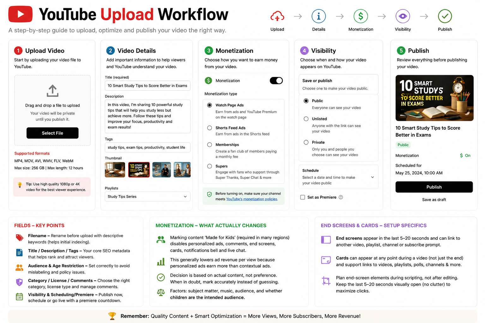
Common Mistakes
- Uploading with the default filename like 'IMG_4821.mp4'.
- Forgetting to set a custom thumbnail before publishing defaults to an auto-generated frame.
- Designing a thumbnail/end-of-video frame so busy there's no visual space left for end screen elements.
FAQs
- Does marking a video 'Made for Kids' always lower revenue?
- Typically yes, because personalized ads (which generally pay more) are disabled, but the setting isn't optional based on revenue preference; it must reflect the actual intended audience and applicable regulations.
- Can I add end screens to a 10-second video?
- No, YouTube requires a minimum video length (25 seconds) for end screens to be available at all, since they need a few seconds of screen time to display properly.
20 — YouTube Studio
The control room, every tab in Studio and what it actually governs. Official link in the Tool & Resource Directory.
Tabs explained
- Dashboard - quick snapshot of recent performance & news.
- Content - manage all uploads, drafts, Shorts, playlists.
- Analytics - deep performance data (see Part 20).
- Comments - moderate, pin, reply, hide held-for-review comments.
- Copyright - view claims/strikes and dispute if needed.
- Monetization - ad settings, eligibility status, revenue features.
- Customization - branding, layout, basic channel info.
- Settings - channel-wide defaults, permissions, advanced settings.
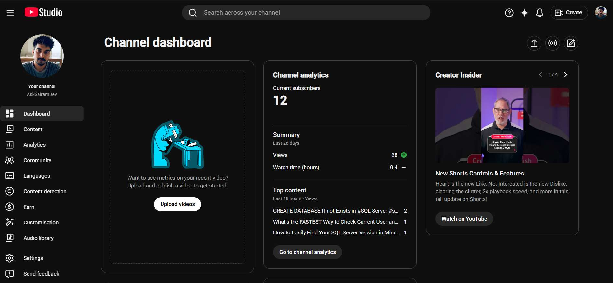
Common Mistakes
- Never checking the Copyright tab until a claim already affects monetization.
- Ignoring channel permissions and giving a video editor full owner-level access by mistake.
21 — Brand Accounts, Permissions & Channel Security
The ownership and access layer almost every beginner skips, until they lose access or hand over too much control.
Personal vs. Brand Account
- A channel created on a personal Google Account is tied directly to one person's identity and recovery options.
- A Brand Account is a separate identity layer that can have multiple managers/owners, recommended the moment you plan to add an editor, co-host, or business partner.
- Converting a personal channel to a Brand Account is supported by YouTube and preserves subscribers/videos, but should be done deliberately, not as an afterthought.
Permission tiers
- Owner - full control, including adding/removing other people and deleting the channel. Give this to no one you don't fully trust.
- Manager - can edit channel settings and upload, but can't manage other users or delete the channel.
- Viewer (Analytics / Viewer) - can see performance data without editing rights, and the correct tier for most freelance editors who only need upload access.
Recovering a hacked or locked channel
- Use Google's official Account Recovery flow first, and this is why backup codes and a recovery phone/email (Part 2) are not optional.
- If a channel is hijacked and content/branding is changed, report it through YouTube's official 'hacked channel' report flow, not third-party 'recovery services' (a common scam target).
- Two-Factor Authentication on the underlying Google Account is the single most effective defense, and most channel hijackings exploit accounts without it.
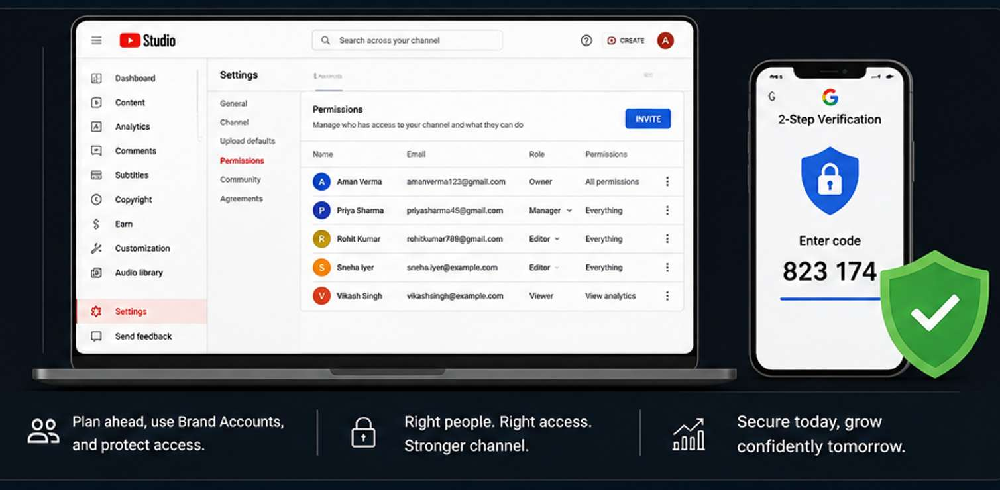
Common Mistakes
- Running a multi-person channel on someone's personal Google login.
- Giving a freelance editor 'Owner' access when 'Manager' or 'Viewer' would do.
- No 2FA on the Google Account behind a monetized channel.
FAQs
- Can I convert my personal channel to a Brand Account later without losing subscribers?
- Yes, YouTube supports this conversion and your videos, subscribers, and watch history stay intact, but always back up your channel details beforehand and do it during low-traffic hours in case of a temporary sync delay.
- What's the very first thing to do if my channel gets hacked?
- Immediately start Google's official Account Recovery process and report the channel as hacked through YouTube's official support flow, do not engage with anyone offering paid 'recovery services,' which is a common follow-up scam.
- Do I need a Brand Account if I'm a solo creator with no editor?
- Not strictly, but it's still recommended, and it costs nothing, and it means the channel isn't permanently welded to one personal Google identity if your circumstances change later.
22 — Analytics
Reading the graphs that actually tell you whether a video worked.
Metrics decoded
- CTR - thumbnail/title effectiveness, healthy range varies by niche (2-10%+).
- Average View Duration / Retention curve - where viewers drop off; sharp early drops = hook problem.
- Traffic sources - Search vs Suggested vs Browse vs External; tells you HOW people find you.
- RPM vs CPM - RPM (revenue per mile) is your actual revenue per 1000 views after YouTube's cut. CPM (cost per mile) is what advertisers pay per 1000 ad impressions.
- Returning vs New viewers - ratio shows whether you're building loyalty or only getting one-off discovery.
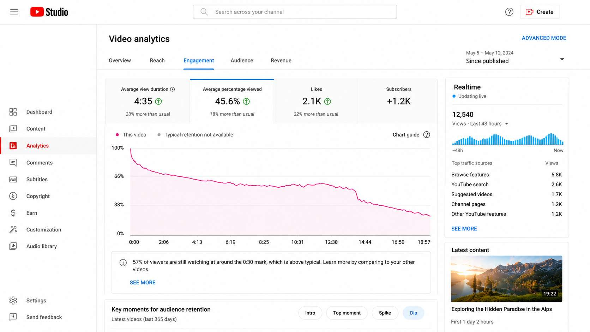
Common Mistakes
- Judging a video only by views in the first hour, ignoring 48-72hr full performance window.
- Confusing CPM (ad market rate) with RPM (your actual take-home) when assessing earnings.
FAQs
- Why did my RPM drop even though my views went up?
- RPM reflects revenue per 1000 views after YouTube's share and ad-market conditions, a views spike from a low-ad-value traffic source (e.g. a country/niche with lower advertiser demand) can lower RPM even as total views and even total earnings rise.
- What counts as a 'good' CTR?
- It varies heavily by niche and impression source, so compare a video only against your own channel's recent average rather than a universal benchmark, and there is no single official 'good' number.
Monetization & Legal
Revenue, contracts, taxes, copyright, and platform policy enforcement.
23 — Monetization
Every legitimate revenue stream available to a YouTube creator, beyond just AdSense.
Platform-native
- Ads - requires meeting Partner Program thresholds (subscriber + watch-hour minimums, policy compliance).
- Channel memberships - recurring fan payments for perks.
- Super Thanks / Super Chat - one-off fan tips on videos/live streams.
Off-platform
- Affiliate marketing - commission from products you recommend with tracked links.
- Digital products / courses - highest margin, built on your expertise.
- Sponsorships / brand deals - paid placements, scale with audience size and niche value.
- Consulting / merchandise - direct services or branded physical products.
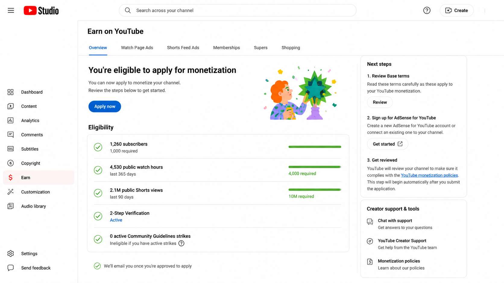
Common Mistakes
- Chasing brand deals before having a media kit or clear audience data to show sponsors.
- Promoting affiliate products you haven't personally vetted, destroys trust fast.
24 — Legal & Business Side of Monetization
The unglamorous paperwork that protects the money you're trying to earn and skipped by almost every beginner, and the reason many lose income later.
Disclosure obligations
- Use YouTube's built-in 'Paid Promotion' toggle on any video containing a paid sponsorship, and this is a platform policy requirement, not optional.
- Most regions also have separate advertising-disclosure laws (e.g. requiring clear, unambiguous disclosure language in the video itself, not just the toggle or description) research the specific rule for your country, since this guide can't give legal advice for every jurisdiction.
- Affiliate links should be disclosed clearly in the description, even though YouTube doesn't enforce this directly undisclosed affiliate relationships erode audience trust and can violate regional consumer-protection rules.
Contracts & sponsorships
- Get sponsorship terms in writing before filming, scope of work, usage rights (can the brand reuse your video as their own ad?), payment timeline, and exclusivity period.
- Never start work on a paid deliverable before a deposit or signed agreement, especially with a first-time brand partner.
- Keep a simple rate card and a one-page agreement template, and most early brand deals don't need a lawyer, but they do need something in writing.
Income & taxes
- YouTube/AdSense income is generally treated as taxable income in most countries, and track it from your very first payout, not after it becomes 'real money.'
- Keep records of equipment, software subscriptions, and other channel-related expenses, and many are legitimately deductible business costs, but rules vary by country.
- If income becomes significant, a local accountant familiar with self-employed/creator income is a worthwhile cost, not a luxury.
Common Mistakes
- Treating a verbal agreement with a brand as sufficient.
- Not using the Paid Promotion toggle on sponsored content.
- Ignoring channel income at tax time because it 'doesn't feel like a real job.'
FAQs
- Do I legally have to disclose affiliate links?
- YouTube doesn't technically enforce it, but many countries have consumer-protection rules requiring clear disclosure of paid/affiliate relationships, and disclosing in the description and verbally where relevant is the safest default regardless of where you're based.
- Is the 'Paid Promotion' toggle the same as legal disclosure?
- It satisfies YouTube's own platform policy, but it may not fully satisfy your country's advertising-disclosure law on its own, and check whether your region also requires explicit spoken or on-screen disclosure within the video itself.
25 — Copyright
Avoiding claims and strikes that can silently kill your monetization. Official source for safe music/SFX is in the Tool & Resource Directory.
Key concepts
- Fair use - a legal defense, not a guarantee; commentary/criticism/parody can qualify but is decided case-by-case, not by self-declaration.
- Claims vs Strikes - a Content ID claim usually just reroutes ad revenue; a copyright strike is far more serious and can lead to channel termination after repeated strikes.
- Creative Commons - explicitly licensed music/footage you can legally reuse, often with attribution required.
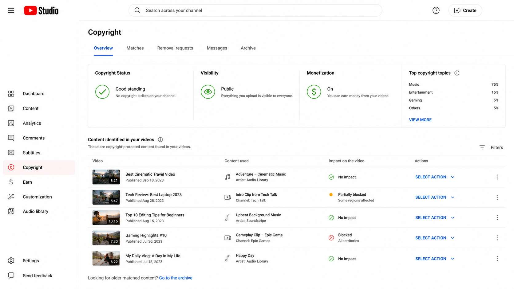
Common Mistakes
- Using full commercial songs as background music 'because it's quiet'.
- Assuming giving credit in the description legally clears copyrighted use, and it does not.
26 — Community Guidelines & Strikes
A completely separate enforcement system from copyright, and the one that governs behavior, not ownership.
How it differs from copyright
- Copyright strikes (previous chapter) are about who owns content. Community Guidelines strikes are about how you behave and what you post, harassment, hate speech, misinformation, spam, dangerous content, and similar policy areas.
- A Community Guidelines strike usually restricts upload/live-stream ability for a set period; repeated strikes within a 90-day window escalate toward channel termination.
- Both systems can run independently, and a channel can rack up Community Guidelines strikes while having a clean copyright record, or vice versa.
What commonly triggers strikes
- Harassment or targeted negative content about specific individuals.
- Spam, deceptive metadata, or repetitive content with no original value.
- Reposting someone else's content with minimal/no original commentary or transformation.
- Content that violates policies on misinformation in sensitive categories (medical, elections, crisis events).
If you receive a strike
- Read the specific policy cited in the strike notice, don't guess, and the notice tells you exactly which policy was triggered.
- If you believe it's a mistake, use YouTube's official appeal process rather than re-uploading the same content under a new title.
- Take the required policy training (YouTube offers this for some first strikes) if it's offered, and it can reduce strike duration.
Common Mistakes
- Assuming 'I gave credit' or 'it's just commentary' is automatically a defense, and it depends on the specific policy and how much original value you added.
- Re-uploading struck content under a new title instead of appealing, and this typically makes things worse, not better.
FAQs
- Will a Community Guidelines strike affect my monetization the same way a copyright claim does?
- Differently, a copyright claim usually just reroutes ad revenue on that one video, while a Community Guidelines strike can restrict your ability to upload, go live, or monetize across the whole channel for a set period, and can affect Partner Program standing if repeated.
- Can I get both a copyright strike and a Community Guidelines strike on the same video?
- Yes, they're independent systems evaluating different things (ownership vs. behavior/policy), so a single video can theoretically trigger both if it violates both areas.
Growth & Longevity
Milestones, advanced tactics, systems, and staying in this for years.
27 — Growing to Milestones
What actually changes (and what to focus on) at each subscriber stage.
Stage focus
- 0 → 100 - find your format; post consistently, don't judge by numbers yet.
- 100 → 1,000 - refine thumbnails/titles using early CTR data, unlocks live streaming and custom URLs eligibility steps.
- 1,000 → 10,000 - Partner Program eligibility territory once watch-hour thresholds are met, start testing sponsorships.
- 10,000 → 100,000 - diversify formats (Shorts + long-form), brand deals become realistic.
- 100,000 → 1,000,000 - systemize: hire editors/thumbnail designers, and treat the channel as a media business.
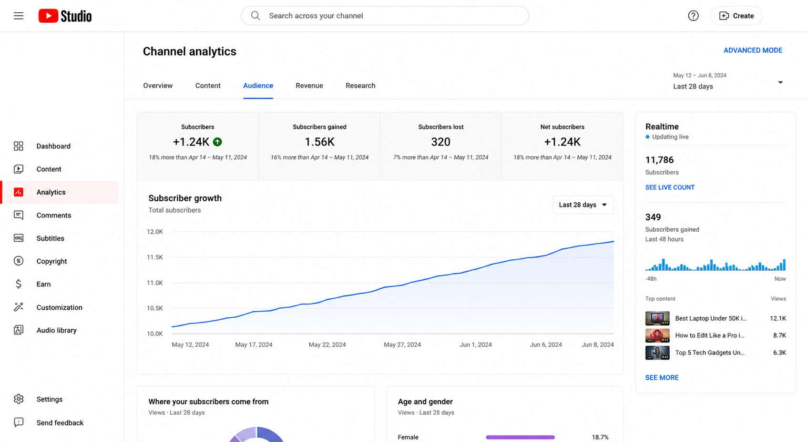
Common Mistakes
- Comparing your Month 1 numbers to a 5-year-old channel's numbers.
- Stopping consistent uploads right after hitting a milestone, losing momentum.
28 — Advanced Growth
Tactics beyond uploading, community, collaboration, cross-platform presence, and paid amplification.
Community Tab - in depth
- Image/text posts - behind-the-scenes content, announcements, or simple questions; the lowest-effort, most frequent post type.
- Polls - direct audience input (e.g. 'which thumbnail?', 'what should I cover next?') that also functions as a lightweight engagement signal between uploads.
- Quizzes - a structured multi-question format for niches where testing knowledge fits the content (educational/trivia channels especially).
- Posting cadence matters more than post complexity, and a short, frequent presence in the Community tab keeps a channel 'active' to both subscribers and the algorithm between video releases.
Other tactics
- Collaboration - borrowing trust from another creator's audience; pick partners with overlapping but not identical audiences.
- Livestreams - real-time engagement, often boosts session watch time (see the dedicated Live Streaming chapter).
- Series & playlists - designed binge-paths that increase session time per visitor.
- Cross-promotion - Instagram, TikTok, Pinterest, LinkedIn, X, WhatsApp/Telegram/Discord communities, and an email list/website you fully own.
Paid promotion (Google Ads for video)
- YouTube ads (run through Google Ads, not directly through YouTube Studio) can boost a specific video's views/reach beyond organic discovery, typically used to seed initial traction for a strong video or promote a product launch.
- Paid promotion works best on content that already proves itself organically (decent retention/CTR) paying to push a genuinely weak video rarely produces a good return.
- This is amplification, not a replacement for organic strategy, and it doesn't directly improve search/suggested ranking the way real watch-time and engagement do.
Rebranding or pivoting a channel
- Changing your niche or handle after the channel has grown carries real risk: existing subscribers subscribed for the old content, and YouTube's recommendation system has learned to show your channel to a specific audience based on history.
- If a pivot is necessary, do it gradually, bridge content that connects the old and new niche performs better than an abrupt switch.
- A handle change breaks old external links/mentions pointing to your previous handle, weigh this cost deliberately rather than changing it casually.
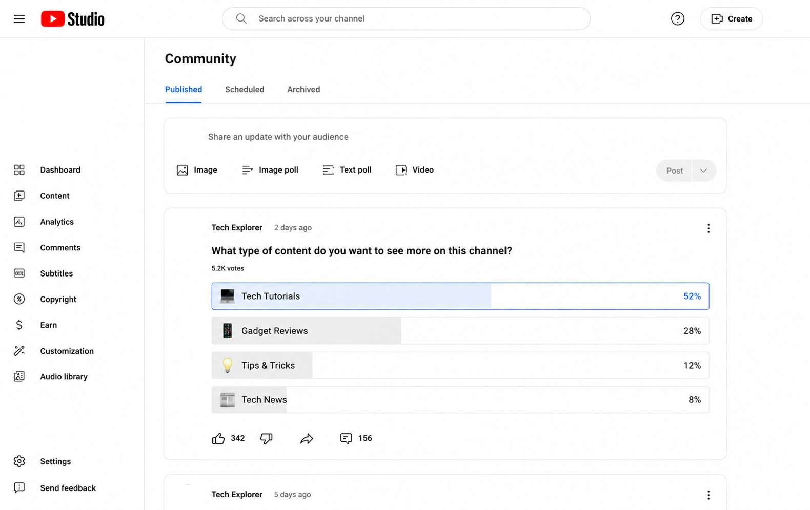
Common Mistakes
- Treating community posts as an afterthought instead of a regular engagement habit.
- Collaborating purely for subscriber trades with zero audience-fit consideration.
- Running paid promotion on a video with no organic engagement signal yet.
FAQs
- Will paid YouTube ads improve my search ranking?
- Not directly, paid views don't inherently boost organic search/suggested ranking the way real audience retention and engagement do, though more eyes on a genuinely good video can indirectly generate more organic engagement.
- Is it ever a good idea to change my channel's niche completely?
- Sometimes, but it should be done deliberately and gradually with bridge content, an abrupt pivot risks losing the audience that subscribed for your original content without yet having earned a new one.
29 — Automation
Systems that let you produce consistently without burning out.
Building the pipeline
- Batch recording - film multiple videos in one session to protect against missed weeks.
- Content pipeline idea → script → record → edit → thumbnail → upload, each stage trackable.
- Templates - reusable thumbnail templates, description templates, intro/outro templates.
- Tracking tools - Notion or Google Sheets boards to track each video's stage and status.
Hiring your first team member
- The first hire is usually an editor or thumbnail designer - pick whichever task you personally find slowest or most draining, not necessarily the 'most important' one.
- Look on platforms built for freelance creative work, or directly inside creator-focused Discord communities in your niche, both tend to surface people who already understand YouTube-specific deliverables.
- Pay a small test project before committing to ongoing work, and a paid trial task reveals far more than a portfolio alone.
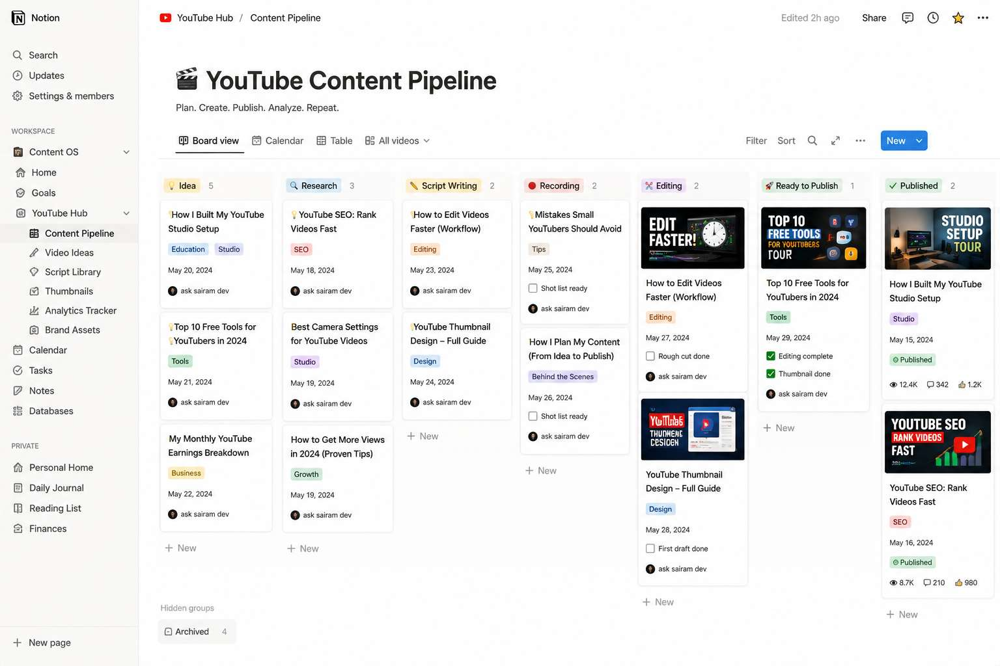
Common Mistakes
- No tracking system, losing track of which videos are scripted vs edited vs scheduled.
- Over-automating personality-driven content until it feels robotic and generic.
- Hiring based on price alone instead of a paid test task.
30 — Creator Sustainability, Backup & Long-Term Career
The parts of a creator career that don't show up in any analytics dashboard, but determine whether you're still making videos in five years.
Burnout - recognizing and preventing it
- Common early signs: dreading filming days you used to enjoy, resenting comments/feedback, or upload anxiety replacing upload excitement.
- Build buffer content (videos filmed and ready ahead of schedule) specifically so one bad week doesn't force a choice between burnout and a missed upload.
- A sustainable schedule you can keep for years consistently outperforms an aggressive schedule you abandon after six months, consistency compounds, sporadic intensity doesn't.
Data backup & platform ownership
- Periodically export your own video files (not just rely on YouTube's copy) and back up your channel's analytics data, you don't fully control infrastructure you don't own.
- Maintain your own list of subscribers/audience reachable outside YouTube (email list, Discord), and this is the only audience asset that survives a platform-level account issue.
- Keep organized local archives of thumbnails, scripts, and brand assets, not just whatever's currently in your editing software's project files.
Multi-Channel Networks (MCNs)
- An MCN is a company that partners with creators for support services (e.g. monetization assistance, brand deals, copyright help) in exchange for a revenue cut or fee.
- Joining isn't required to succeed on YouTube, many successful channels never join one, and it's worth evaluating specifically what services are offered versus what you give up in revenue share or contractual flexibility.
- Read any MCN contract for exclusivity clauses and exit terms before signing; some make it difficult or costly to leave later.
Common Mistakes
- Treating burnout as a personal failure rather than a predictable result of an unsustainable schedule.
- Never exporting/backing up channel data until something goes wrong.
- Signing an MCN contract without checking the exit/exclusivity terms.
FAQs
- Do I need to join a Multi-Channel Network to grow?
- No, MCNs are optional, and many large channels operate independently; it's worth evaluating one only against concrete services offered, not as a default step every creator must take.
- How do I actually back up a YouTube channel?
- Periodically download your original video files and export your channel analytics/audience data yourself, and maintain an audience channel you fully own (email list, Discord), and there is no single official 'backup my channel' button, so this has to be a deliberate personal habit.
Reference & Roadmap
Mistakes to avoid, quick tips, case studies, resources, and the full plan.
31 — Common Mistakes
The patterns that quietly stall almost every beginner channel.
Top recurring mistakes
- Inconsistent upload schedule with long unexplained gaps.
- Designing thumbnails after exporting the video instead of planning them with the script.
- Ignoring analytics entirely, or checking only view count and nothing else.
- Multi-niche jumping before establishing any one audience.
- Copying a successful creator's exact format without adapting it to your own strengths.
- Treating the first 10 videos as 'final' instead of as learning reps.
- No clear CTA, or five conflicting CTAs in one video.
- Obsessing over gear before mastering storytelling fundamentals.
- Skipping captions, losing accessibility and a chunk of muted-watch retention.
- Quitting right before the compounding period of consistent uploads starts paying off.
32 — Practical Tips
Fast, actionable advice, pick five and apply them this week.
Sample fast tips
- Hook within 3 seconds, no logo, no 'hey guys' intro.
- Look at the lens, not the screen, when talking-head recording.
- Keep description's first 2 lines keyword-rich, and that's what shows in search snippets.
- Reuse your best-performing title structure, swap the topic.
- Pin your own comment with a question to seed engagement.
- Add chapters to anything over 5 minutes.
- Re-upload your best old video as a Short with a new hook.
- Study the top 3 thumbnails in your niche weekly.
- Don't delete underperforming videos, and they still feed search traffic over time.
- End every video pointing to exactly one next video, not your whole channel.
33 — Case Studies
What separates breakout channels from ones that plateau, patterns to study, not copy.
What to actually analyze
- Format discipline - breakout channels usually nail ONE repeatable format before diversifying.
- Title/thumbnail pattern - look for a consistent emotional or curiosity pattern across their top 10 videos.
- Upload cadence change points - many channels show a visible growth inflection right after increasing consistency, not after 'going viral'.
- Niche-to-broad expansion timing - most expand niches only after an established core audience, not before.
Common Mistakes
- Copying a successful channel's exact thumbnail style without the underlying content strategy behind it.
34 — Resources
A clean reference list of where to get everything for free, full official links for every site are in the Tool & Resource Directory below.
Free resource map
- Music & SFX - YouTube Audio Library, Pixabay Music.
- Footage & photos - Pexels, Pixabay, Unsplash, Freepik.
- Icons & fonts - Flaticon, IconScout, Google Fonts.
- Editing software - DaVinci Resolve, CapCut, Kdenlive, Shotcut, OpenShot, Clipchamp.
- AI tools - ChatGPT, Gemini, Claude, Leonardo AI, ElevenLabs.
35 — Glossary - All Terms in One Place
A single reference for every acronym and term used throughout this guide, and bookmark this chapter.
Performance & analytics terms
- CTR - Click-Through Rate: % of impressions that result in a click.
- RPM - Revenue Per Mille: your actual estimated revenue per 1,000 views, after YouTube's share.
- CPM - Cost Per Mille: what advertisers pay per 1,000 ad impressions (not the same as RPM).
- AVD - Average View Duration: the average length of time viewers watch a video.
- Impressions - the number of times a thumbnail was shown to potential viewers.
Content & metadata terms
- LSI keywords - Latent Semantic Indexing keywords: related terms search engines associate with a topic, used loosely in SEO writing to mean 'contextually related phrases.'
- Search intent - the underlying goal behind a search query (informational, navigational, transactional).
- Evergreen content - content that stays relevant and searchable for years, as opposed to time-sensitive trending content.
- Long-tail keyword - a longer, more specific search phrase with lower volume but higher intent-match.
Platform & policy terms
- COPPA - Children's Online Privacy Protection Act (US); the regulatory backdrop behind YouTube's 'Made for Kids' system.
- Content ID - YouTube's automated copyright-matching system, which generates copyright claims.
- MCN - Multi-Channel Network: a company offering creator support services in exchange for a fee or revenue share.
- EEAT - Experience, Expertise, Authoritativeness, Trustworthiness: a framework Google uses (in Search, and informally relevant to platform trust generally) to assess content quality.
36 — Final Roadmap
The complete day-by-day, month-by-month plan tying every chapter together.
Timeline
- Day 1 - Secure Gmail, create channel, pick niche.
- Week 1 - Brand kit, profile picture, banner, channel optimization complete.
- Month 1 - First 4-8 videos published on a fixed schedule, analytics reviewed weekly.
- Month 3 - Keyword research refined using real data; thumbnail/title patterns identified from your own top performers.
- Month 6 - Monetization eligibility pursued, first cross-promotion and collab attempted.
- Month 12 - Systemized pipeline, diversified revenue streams, case-study-level self-review of your own channel.
Verified Tool & Resource Directory
Every tool, website, and AI service mentioned across this guide with its official link, purpose, free vs. paid breakdown, best use cases, limitations, and alternatives. Always go to the official site listed here rather than a third-party mirror.
Canva
www.canva.com ↗Purpose: Drag-and-drop graphic design for thumbnails, banners, logos, and social posts.
Why recommended: Fastest learning curve of any design tool, huge free template library, built-in brand kit.
Free vs. Paid: Generous free tier with thousands of templates. Canva Pro adds premium assets, background remover, brand kit automation.
Best use cases: Thumbnails, banners, channel art, quick social graphics.
Limitations: Free tier locks some premium elements/templates behind a Pro paywall.
Alternatives: Adobe Express, Microsoft Designer
Adobe Express
www.adobe.com/express/ ↗Purpose: Web-based design tool for graphics, short videos, and simple animations.
Why recommended: Backed by Adobe's stock library and font system.
Free vs. Paid: Free plan covers most templates with Premium unlocks Adobe Stock assets and brand kits.
Best use cases: Quick banner/thumbnail edits, short promotional videos.
Limitations: Smaller community template library than Canva.
Alternatives: Canva, Microsoft Designer
Microsoft Designer
designer.microsoft.com ↗Purpose: AI-assisted graphic design with text-to-image generation.
Why recommended: Free AI image generation built in, no separate AI tool needed for simple graphics.
Free vs. Paid: Free with a Microsoft account; some advanced generations may need credits.
Best use cases: AI-generated thumbnail backgrounds, quick social graphics.
Limitations: Requires Microsoft account with less template depth than Canva.
Alternatives: Canva, Leonardo AI
Photopea
www.photopea.com ↗Purpose: Free browser-based image editor with full Photoshop-style layers.
Why recommended: No install needed, opens .PSD files, free for unlimited use.
Free vs. Paid: 100% free to use ad-supported.
Best use cases: Advanced thumbnail edits, layer-based compositing, PSD editing.
Limitations: Steeper learning curve than Canva, ads in free version.
Alternatives: Adobe Photoshop, Pixlr
Figma
www.figma.com ↗Purpose: Interface design and layout tool, great for precise reusable templates.
Why recommended: Component/auto-layout system makes reusable thumbnail templates effortless.
Free vs. Paid: Free tier covers personal use fully, paid tiers add team collaboration.
Best use cases: Building reusable thumbnail/banner templates with consistent grids.
Limitations: Not built specifically for photo editing or raster effects.
Alternatives: Canva, Adobe XD
Pixlr
pixlr.com ↗Purpose: Quick AI-assisted photo editing and background tools in-browser.
Why recommended: Fast one-click AI tools (cutout, retouch) for simple edits.
Free vs. Paid: Free with ads and limited exports, and Premium removes ads and limits.
Best use cases: Fast face/cutout edits, simple AI retouching.
Limitations: Free tier export limits and watermark-like restrictions.
Alternatives: Remove.bg, Photopea
Leonardo AI
leonardo.ai ↗Purpose: AI image generation for thumbnail concepts, profile art, and channel branding.
Why recommended: Strong free daily credits and fine-tuned models for stylized art.
Free vs. Paid: Free daily generation credits with paid plans add more credits and faster generation.
Best use cases: AI-generated thumbnail concepts, profile picture art, banner backgrounds.
Limitations: Free credits are limited per day, queue times during peak load.
Alternatives: Ideogram, Microsoft Designer, Midjourney
ChatGPT
chatgpt.com ↗Purpose: AI assistant for scripting, titles, descriptions, brainstorming, and SEO copy.
Why recommended: Most widely supported AI writing assistant with strong YouTube-specific knowledge.
Free vs. Paid: Free tier available Plus subscription unlocks faster/advanced models.
Best use cases: Scripts, titles, descriptions, hooks, keyword brainstorming.
Limitations: Can produce generic phrasing if used without editing.
Alternatives: Gemini, Claude
Google Fonts
fonts.google.com ↗Purpose: Free, open-source font library for thumbnails, banners, and lower-thirds.
Why recommended: 100% free for commercial use, no licensing headaches.
Free vs. Paid: Completely free, no paid tier.
Best use cases: Brand typography for thumbnails, banners, overlays.
Limitations: Some niche premium-style fonts unavailable.
Alternatives: Adobe Fonts, IconScout (icon fonts)
IconScout
iconscout.com ↗Purpose: Icon and illustration library for overlays and lower-thirds.
Why recommended: Huge variety with consistent icon styles/sets for cohesive branding.
Free vs. Paid: Free icons available with attribution Pro removes attribution and unlocks premium packs.
Best use cases: Channel branding icons, overlay graphics.
Limitations: Best icon sets often gated behind Pro.
Alternatives: Flaticon
Flaticon
www.flaticon.com ↗Purpose: Free icon library for graphics and overlays.
Why recommended: Massive free catalog, consistent style families.
Free vs. Paid: Free with attribution; Premium removes attribution requirement.
Best use cases: Thumbnail icons, channel art accents.
Limitations: Attribution required on free tier.
Alternatives: IconScout
Pexels
www.pexels.com ↗Purpose: Free stock photos and video footage.
Why recommended: High-quality, free for commercial use with no attribution required.
Free vs. Paid: Fully free, including for commercial use.
Best use cases: B-roll footage, thumbnail backgrounds.
Limitations: Smaller catalog than paid stock libraries.
Alternatives: Pixabay, Unsplash
Pixabay
pixabay.com ↗Purpose: Free stock photos, video, and music.
Why recommended: Covers images, footage, AND music/SFX in one free library.
Free vs. Paid: Fully free for most content; some contributor content marked for paid use.
Best use cases: B-roll, background music, sound effects.
Limitations: Quality varies more than curated paid libraries.
Alternatives: Pexels, Unsplash
Unsplash
unsplash.com ↗Purpose: Free high-resolution stock photography.
Why recommended: Consistently high production-value photos, free commercial license.
Free vs. Paid: Fully free for commercial use.
Best use cases: Thumbnail backgrounds, banner imagery.
Limitations: No video or music content.
Alternatives: Pexels, Pixabay
Freepik
www.freepik.com ↗Purpose: Stock vectors, photos, PSD templates, and AI image tools.
Why recommended: Strong library of editable design templates, not just photos.
Free vs. Paid: Free with attribution Premium removes attribution and unlocks full catalog.
Best use cases: Editable banner/thumbnail templates, vector graphics.
Limitations: Attribution required on free downloads.
Alternatives: Canva, Unsplash
Remove.bg
www.remove.bg ↗Purpose: Instant AI background removal for photos.
Why recommended: One-click accurate cutouts, faster than manual masking.
Free vs. Paid: Free for low-res previews paid credits for high-res downloads.
Best use cases: Cutout face/product shots for thumbnails.
Limitations: Free downloads are lower resolution.
Alternatives: Photopea, Pixlr
TinyPNG
tinypng.com ↗Purpose: Image compression for faster-loading thumbnails and graphics.
Why recommended: Smart compression keeps visual quality while shrinking file size.
Free vs. Paid: Free for files under 5MB per image, several per session.
Best use cases: Compressing thumbnails/banners before upload.
Limitations: Free tier batch size limits.
Alternatives: Squoosh
CapCut
www.capcut.com ↗Purpose: Mobile-first video editor with trending effects, perfect for Shorts.
Why recommended: Fastest editor for vertical/Shorts content with built-in captions and trends.
Free vs. Paid: Free with most features CapCut Pro adds extra effects/export options.
Best use cases: Shorts editing, auto-captions, trending transitions.
Limitations: Some premium effects/exports require subscription.
Alternatives: VN Editor, Adobe Express
VN Editor
vn.video ↗Purpose: Mobile/desktop video editor with precise keyframe controls.
Why recommended: Clean, ad-light interface with professional keyframing for free.
Free vs. Paid: Fully free core editor minimal paid add-ons.
Best use cases: Mobile-first long-form and Shorts editing.
Limitations: Smaller effects library than CapCut.
Alternatives: CapCut
DaVinci Resolve
www.blackmagicdesign.com/products/davinciresolve ↗Purpose: Professional desktop NLE with color grading, free for unlimited use.
Why recommended: Hollywood-grade color tools and editing, completely free version is full-featured.
Free vs. Paid: Free version covers nearly all features Studio paid version adds advanced color/effects.
Best use cases: Long-form video editing, professional color grading.
Limitations: Steepest learning curve of all listed editors.
Alternatives: Kdenlive, Shotcut
Kdenlive
kdenlive.org ↗Purpose: Free, open-source desktop video editor.
Why recommended: Lighter learning curve than Resolve, fully open-source and free.
Free vs. Paid: 100% free, no paid tier.
Best use cases: Desktop long-form editing on a budget machine.
Limitations: Less polished color tools than Resolve.
Alternatives: Shotcut, OpenShot
Shotcut
shotcut.org ↗Purpose: Free, open-source cross-platform video editor.
Why recommended: Simple interface, wide format support, free forever.
Free vs. Paid: 100% free, no paid tier.
Best use cases: Basic to intermediate long-form editing.
Limitations: UI feels dated compared to modern editors.
Alternatives: Kdenlive, OpenShot
OpenShot
www.openshot.org ↗Purpose: Free, beginner-friendly open-source video editor.
Why recommended: Simplest interface for absolute beginners moving from phone editors.
Free vs. Paid: 100% free, no paid tier.
Best use cases: Beginner long-form editing, simple cuts and transitions.
Limitations: Can be less stable on very long/complex timelines.
Alternatives: Shotcut, Kdenlive
Clipchamp
clipchamp.com ↗Purpose: Browser-based video editor by Microsoft, fast for simple cuts/templates.
Why recommended: No install, built into Windows, good for quick template-based edits.
Free vs. Paid: Free tier covers most editing Premium unlocks extra stock/effects.
Best use cases: Quick browser-based edits, simple templated videos.
Limitations: Less depth than dedicated NLEs for complex projects.
Alternatives: Adobe Express, CapCut
Gemini
gemini.google.com ↗Purpose: Google's AI assistant for scripting, research, and content ideas.
Why recommended: Deep integration with Google Search/Workspace for research-heavy scripting.
Free vs. Paid: Free tier available Gemini Advanced via Google One AI Premium.
Best use cases: Research-backed scripts, brainstorming, data summarization.
Limitations: Free tier has lower usage limits than paid tier.
Alternatives: ChatGPT, Claude
Claude
claude.ai ↗Purpose: AI assistant for long-form scripting, editing, and structured writing.
Why recommended: Strong at long-context writing and careful editing/structuring of scripts.
Free vs. Paid: Free tier available Pro adds higher usage limits and advanced models.
Best use cases: Long scripts, description writing, structured outlines.
Limitations: Free tier has message limits during high-traffic periods.
Alternatives: ChatGPT, Gemini
Ideogram
ideogram.ai ↗Purpose: AI image generation known for accurate text rendering in images.
Why recommended: Best-in-class for thumbnails that need readable text baked into the image.
Free vs. Paid: Free daily generations paid plans add more credits and priority generation.
Best use cases: Thumbnail concepts with text overlays generated directly.
Limitations: Free daily limit caps experimentation.
Alternatives: Leonardo AI, Microsoft Designer
ElevenLabs
elevenlabs.io ↗Purpose: AI voice generation for faceless-channel voiceovers.
Why recommended: Most natural-sounding AI voices currently available, with cloning options.
Free vs. Paid: Free tier with limited monthly characters paid tiers scale character limits.
Best use cases: Faceless video voiceovers, multilingual dubbing.
Limitations: Free tier character quota runs out fast for long-form content.
Alternatives: HeyGen (avatar+voice), Synthesia
Runway
runwayml.com ↗Purpose: AI video generation and editing tools, including text-to-video.
Why recommended: Pioneer in AI video generation with strong creative control tools.
Free vs. Paid: Limited free credits paid plans unlock more generation time.
Best use cases: Short AI-generated b-roll clips, creative video effects.
Limitations: Free credits are limited longer generations need a paid plan.
Alternatives: Pika, HeyGen
Pika
pika.art ↗Purpose: AI text/image-to-video generation tool.
Why recommended: Fast generation speed for short creative video clips.
Free vs. Paid: Free tier with limited generations paid plans add volume/quality.
Best use cases: Short AI b-roll, creative transitions.
Limitations: Clip lengths are short, not suited for full videos.
Alternatives: Runway, Synthesia
HeyGen
www.heygen.com ↗Purpose: AI avatar video generation for talking-head-style content without filming.
Why recommended: Realistic AI presenters useful for faceless or multilingual channels.
Free vs. Paid: Free tier with limited monthly minutes paid plans scale minutes/avatars.
Best use cases: Faceless talking-head videos, multilingual versions of a script.
Limitations: Free minutes are limited avatar realism varies by plan.
Alternatives: Synthesia, ElevenLabs
Synthesia
www.synthesia.io ↗Purpose: AI avatar video creation, popular for corporate/educational content.
Why recommended: Wide avatar/language selection, strong for tutorial-style explainer videos.
Free vs. Paid: Limited free trial paid plans required for ongoing use.
Best use cases: Educational/corporate explainer videos without on-camera filming.
Limitations: No meaningful free tier for long-term use.
Alternatives: HeyGen
Whisk
labs.google/whisk ↗Purpose: Google's experimental AI tool for remixing images into new visuals.
Why recommended: Useful for quick creative thumbnail/style remixing experiments.
Free vs. Paid: Free to use as a Google Labs experiment.
Best use cases: Creative thumbnail remix experiments.
Limitations: Experimental tool, features/availability may change.
Alternatives: Leonardo AI, Ideogram
vidIQ
vidiq.com ↗Purpose: YouTube SEO and analytics browser extension/dashboard.
Why recommended: Keyword scoring and competitor tracking directly inside YouTube's interface.
Free vs. Paid: Free tier with basic keyword data paid tiers unlock deeper competitor analytics.
Best use cases: Keyword research, channel audits, trend alerts.
Limitations: Best features are paid-tier only.
Alternatives: TubeBuddy
TubeBuddy
www.tubebuddy.com ↗Purpose: YouTube SEO, bulk-editing, and channel management browser extension.
Why recommended: Strong bulk tag/thumbnail A/B testing tools alongside SEO scoring.
Free vs. Paid: Free tier available Pro/Legend tiers unlock advanced bulk tools.
Best use cases: Tag management, thumbnail A/B testing, SEO scoring.
Limitations: Advanced bulk-processing tools require paid tier.
Alternatives: vidIQ
KeywordTool.io
keywordtool.io ↗Purpose: Keyword suggestion tool pulling autocomplete data across platforms.
Why recommended: Pulls YouTube-specific autocomplete suggestions at scale.
Free vs. Paid: Free tier shows keywords without search volume paid unlocks volume/trend data.
Best use cases: Long-tail keyword discovery for titles/descriptions.
Limitations: Search volume data is paid-only.
Alternatives: AnswerThePublic, Google Trends
AnswerThePublic
answerthepublic.com ↗Purpose: Visualizes question-based searches around a topic.
Why recommended: Great for finding the exact questions your audience is asking.
Free vs. Paid: Limited free searches per day paid plans unlock unlimited searches.
Best use cases: Mapping FAQ-style video ideas and script angles.
Limitations: Free daily search limit is small.
Alternatives: KeywordTool.io
Google Trends
trends.google.com ↗Purpose: Tracks search interest over time for any topic/keyword.
Why recommended: Confirms whether a topic is rising, falling, or seasonal, completely free.
Free vs. Paid: 100% free, no paid tier.
Best use cases: Validating topic timing and seasonal content planning.
Limitations: Shows relative interest only, not exact search volume.
Alternatives: Google Keyword Planner
Google Keyword Planner
ads.google.com/home/tools/keyword-planner/ ↗Purpose: Google Ads tool showing keyword search volume and competition.
Why recommended: Real search volume data straight from Google's own ad platform.
Free vs. Paid: Free to use with a Google Ads account (some data ranges shown if no active campaign).
Best use cases: Cross-checking keyword volume found via YouTube/Google Trends.
Limitations: Built for Google Search ads, not YouTube-specific volume.
Alternatives: vidIQ, TubeBuddy
YouTube Audio Library
www.youtube.com/audiolibrary ↗Purpose: YouTube's official free music and sound effects library.
Why recommended: Guaranteed copyright-safe for use directly on YouTube.
Free vs. Paid: 100% free for use on YouTube.
Best use cases: Background music and SFX for any video without copyright risk.
Limitations: Smaller catalog than commercial music libraries.
Alternatives: Pixabay Music
YouTube Studio
studio.youtube.com ↗Purpose: Official YouTube creator dashboard for uploading, analytics, and channel management.
Why recommended: The single official control center for every channel setting covered in this guide.
Free vs. Paid: 100% free for all creators.
Best use cases: Uploading, analytics, monetization, copyright, customization.
Limitations: None, it's the official required platform tool.
Alternatives: None, official only
Google Account Security
myaccount.google.com/security ↗Purpose: Official dashboard for securing the Gmail account behind your channel.
Why recommended: The official place to enable 2FA, recovery options, and backup codes.
Free vs. Paid: 100% free.
Best use cases: 2FA setup, recovery email/phone, backup codes, password checkup.
Limitations: None, official only.
Alternatives: None, official only